Девятая планета (Исландия, 2015)
Предисловие
“Исландия - последняя страна, в которую стоит отправляться на велосипеде” (вроде Lonely Planet Guide Books).
Думаю, что не соглашусь и постараюсь в нашем отчете это мнение опровергнуть
Однозначно одно: Норвегия - не дорогая страна _files/grin.gif)
Время велопохода: 18 июля - 9 августа 2015 г. (23 дня, из них полных дней в Исландии - 20)
Участники: Лёша и Маша (BlooD3r и Avanturistka)
Километраж: ~1180 км вело + пешка в Ландманналаугаре (Landmannalaugar) и Скафтафедле (Skaftafell)
Наш трек
Маршрут по дням:
18 июля В путь-дорогу: Минск-Вильнюс-Рейкьявик
19 июля Привет, Исландия! Привет, Рейкьявик!
20 июля Ветер, ветер, ты могуч! Reykjavik - Тингведлир ((T)ingvellir)
21 июля День приятной неожиданности: Тингведлир ((T)ingvellir) - Geysir
22 июля Всем попоморщерам посвящается! Или кто любит пожестче: Geysir - берег неизвестной реки
23 июля Пустошь Смауга: берег неизвестной реки - Ландманналаугар (Landmannalaugar)
24 июля Прогулка по вулканам: Landmannalaugar
25 июля 106 км на гречке с тунцом или Highway to Hell-а: Landmannalaugar - Hella
26 июля Трасса 1: Hella - Skogafoss
27 июля Пальцы Атлантического тролля: Skogafoss-Vik
28 июля Вкручивая в ритме с ветром: Vik- Киркьюбайярклёйстюр (Kirkjub(e)jarklaustur)
29 июля Мертвые земли: Киркьюбайярклёйстюр - Скафтафедль (Skaftafell)
30 июля Достучаться до ледника: Скафтафедль (Skaftafell)
31 июля Господин вмордувинд: Скафтафедль (Skaftafell) - Hrollaugssta(d)ir
1 августа Удивительный восток: Hrollaugssta(d)ir - H(o)fn - Egilssta(d)ir
2 августа Да здравствуют бурболки: Egilssta(d)ir - Dettifoss - Krafla - Hverir - Reykjahli(d)
3 августа Живописные окрестности “Комариного озера”: Reykjahl(d); - Fossh(o)ll vi(d) Go(d)afoss
4 августа Северная столица: Fossh(o)ll vi(d) Go(d)afoss - Akureyri
5 августа Детский восторг: Akureyri - Reykjav(i)k
6 августа День, когда я полюбила Исландию: Reykjav(i)k - Kr(y)suv(i)kurberg
7 августа Птичьи земли: Kr(y)suv(i)kurberg - Gar(d)ur
8 августа Дождливое “до свидания”: Gar(d)ur - Keflav(i)k International Airport
9 августа Sweet Home: Вильнюс-Минск
Отучившись на геофаке долгих 5 лет и даже написав курсовую работу по Исландии было невозможным не посетить этот чудо-остров посреди Атлантики. Всё сводилось к вопросу времени.
Масло в огонь желания подливали сначала вышедший в 2013 году фильм “Невероятная жизнь Уолтера Митти”, затем в 2014 г. серия программы “Орел и решка. На краю света. Исландия”, заключительным аккордом к действию прозвучал рекламный ролик “Inspired by Iceland”.
И даже при просмотре ролика в очередной 20й раз я подпевала, улыбалась до ушей и прыгала по комнате! Мы были неимоверно счастливы и вдохновлены, что такой веер чудес нам удастся лицезреть, трогать, погружаться и вдыхать!
Велокосмонавты Лёша и Маша готовы исследовать!
Немного о планировании и быте во время похода:
Виза: Исландия не состоит в ЕС, зато подписала шенгенское соглашение. Поэтому вопросов с получением шенген визы любыми правдами и неправдами не должно возникнуть
Билеты на остров: летели через исландский лоукост WOW air
Даже звучит смешно - исландский лоукост. Билеты покупали в последних числах ноября 2014 г. Билеты вышли дорого, если не сказать, что очень дорого, учитывая время покупки. Зато летели без пересадок из Вильнюса.
Как совет - подпишитесь на новости от Vandrouki.by (отличный сайт для путешественника), следите за акциями, подбирайте варианты перелетов и будет вам дешевый билет. Если полетите без велосипеда, то не возникнет проблемы с возможными стыковками/пересадками и купить билет можно будет еще дешевле.
В Исландию сейчас не летает только ленивый
а это WOW air так бережно перевозит ваш багаж на посадку
Да-да, и к велам вашим (их перелет обойдется в 40 евро) также проявляют особую заботу, не сомневайтесь
Общественный транспорт: о нем я много не сообщу, т.к. были на своих железных конях, но пользовались пару раз, дабы:
- добраться от аэропорта до Рейкьявика (порядка 50 км) в первый день (местный лоукост до столицы K-Express, многим дешевле Flybus (раза в 4) + провоз велов бесплатно)
- забраться с юго-востока страны на север (автобусы Sterna)
- перелететь из Акурейри Air Iceland, чтобы снова оказаться в Рейкьявике.
Вот в общем-то и всё. А! Ну стоимость билетов, конечно, очень и очень и очень, ну очень высокая. Зато с велосипедами можно хоть в салон автобуса, а в самолет - не разбирая и не складывая даже в чехол
Более подробную информацию о транспорте Исландии и не только можно почитать на сайте ВелоПитера - Велосипедный путеводитель по Исландии
Другой транспорт: таковым является аренда легкового автомобиля или внедорожника. Сие удовольствие весьма и весьма дорогое. На легковушке легко проедете вокруг всей Исландии по кольцевой трассе, но самое то интересное - в сердце страны, а тут без внедорожника не обойтись.
_files/IMG_3195.jpg)
Зато заимея такой агрегат на время путешествия, вы несомненно будете счастливы.
А как совет - отправляйтесь в путешествие большой дружной компанией, тогда это не так сильно ударит по кошельку и сознанию.
Дороги: зависит от того, какой маршрут себе наметите.
Вокруг страны - дорога номер 1 на 1332км из которых 1300км - асфальт, но самое то интересное опять же где - в центре! Где дороги даже летом бывают закрыты.
Приведу пару фото (это когда вы выбираете на карте дороги, отмеченные пунктирчиком)
"Следующие два фото - это не броды. Это река разлилась и затопила дорогу (road F88)" из отчета Татьяны Воробьевой 2013 г.
Их трек:
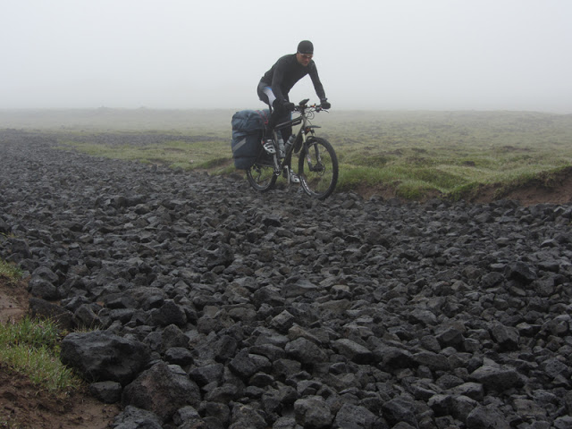
Ну а на асфальте вас с распростертыми объятиями встретит ветер, что двигаться с хорошей горочки вы будете на скорости 8 км/ч с усилием подкручивая на малой звезде спереди, а по плашмяку - 6-7 км/ч.
Но так, конечно, будет не каждый день, порой ветер будет в спину
На карте прям так и отмечено Dangerous winds и перед отлетом с острова все велосипедисты только о них и говорят.
Велосипедистам, кстати, советуют крутить педали, начиная с позднего вечера и ночью, мол, ветра тогда стихают + у вас появится уникальная возможность лицезреть невероятные по красоте закаты и восходы
Еда: еще раз повторюсь Исландия - дорогая страна _files/yes.gif)
Посему с собой мы взяли:
1 кг гречки
1 кг лапши
6 шт тушенки
1 палка брауншвейской колбасы
20 шт супов Galina Blanka
сухофрукты
батончики
орехи
0.5 кг леденцов
4 больших упаковки сгущенки
Но т.к. есть хотелось постоянно (холод, вездесущий ветер, велопешинг) и наши запасы быстро таяли, то магазины мы также посещали.
Национальная кухня хоть и будет выглядеть эстетично и подарит вам новые вкусовые грани, но аппетит от нее у вас пропадет очень скоро и боюсь, что насовсем.
И впредь вы будете делать правильный выбор на перекусы.
Завтраки и ужины готовили на горелке, газ приобретали по прилету на заправке в Рейкьявике.
Местные деньги: их мы видели однажды, когда расплачивались карточкой за душ и нам выдали монетки для бросания в душевой (на счастье )
Наличка в Исландии не в почете - везде терминалы. Даже когда рейнджеры приедут за вами (принять оплату за кемпинг) в 23.00 за 10 км от офиса, у них в кармане будет банковский терминал.
Туалеты: в Исландии для велосипедистов с этим большие пробелы. Нет туалетов на приемлемом расстоянии, нет деревьев, нет кустов. Вдоль дороги ограждения. На трассе 1 много путешественников.
Если у парней с этим особых вопросов не возникает, то как быть девушке - ума не приложу. Однозначно - надо меньше пить
Ночлег: все ночи спали в палатке (подавляющее большинство раз - в кемпинге и пару раз - “где-то”), о домике не думали, да и забуканы они другими путешественниками за много месяцев вперед.
Возвращаясь самолетом WOWair в Вильнюс, наткнулась на любопытную статью в их местном журнале с заголовком: “Как не разозлить исландца?” Подача немного жесткая, учитывая, что мы гости.
По поводу ночлега: “нет ничего плохого в том, чтобы быть экономными” написано в статье, но ведь так мало стоит (по их меркам) заплатить little fee at a camping site. К тому же, стоять с палаткой рядом с городом или местностью, где есть кемпинг, запрещено.
Встреченная нами московская группа велосипедистов даже рассказывала про случай, когда посреди ночи к ним приехал landowner и требовал покинуть его территорию, пиная палатки, ругаясь и угрожая. Деньги, правда, разрулили ситуацию, т.к. была глухая ночь.
По поводу туалетов: советуют лучше планировать маршрут и предполагать, что будут длительные переезды и если уж “обос***лись”, то будьте добры возьмите лопату и закопайте.
Погода: нам снова несказанно повезло. Затяжной дождь случился лишь на севере пару дней, а так - солнце почти всегда и температура 11-13 выше ноля, что можно принимать за счастье.
Во многих кемпингах вывешивают прогноз погоды по дням - это весьма умиляет
Год на год в Исландии не приходится: бывает проливной дождина ежедневно, бывает, что и снег в июле не случайность, а когда в придачу всё затянуто дымкой тумана, так и жить не хочется.
Экипировка: В одном из отчетов прочитала, что куртка, которая в прошлом году “вроде бы не промокала” - не вариант для Исландии. Нужны вещи с хорошей степенью водонепроницаемости и ветрозащиты. Моя 2013 года покупки уже отработала своё и никакие взывающие к жизни средства не помогали воскресить ее водоотталкивающие свойства. Т.к. в наших магазинах тур.снаряжения такие чудесные курточки продаются за 5 с лишним миллионов, решила обойтись малым: дождевик - наше всё!
Для прохождения бродов приобрели себе неопреновые носки 3мм - отличная вещь!
А в остальном - ничего необычного, стандартная экипировка для велопохода.
Возможно, после краткого изложения бытовых вопросов нашего путешествия, вы задумаетесь, а стоит ли ехать в Исландию, к тому же на велосипеде. Но об этом - самом главном - будет в полном отчете в скором времени.
п.с. не переключайтесь (с)
пока можно почитать наши отчеты:
о велопоходе по Норвегии в 2013 г. Велофьординг: 920 км счастья
и о треккинге вокруг горного массива Аннапурна в 2014 г. Непальский калейдоскоп
А чтобы вы активнее планировали свое путешествие в Исландию , вот вам полезные ссылки (абсолютно все они были открыты и проверены на функционирование в браузере Google Chrome 22 мая 2016 г.):
Погода в Исландии
http://en.vedur.is/
www.belgingur.is/locales/en
www.yr.no
Суперкрутая карта для велосипедистов, представленная в разрешении "так себе, для наглядности" в первом сообщении, теперь в формате pdf (около 8 "метров")
https://drive.google.com/open?id=0B6PO5h3Erh5bd19iNDg2Vk9XVGc
Это невероятная находка, кто мы мог подумать, что такая полезная штука имеет место быть!
Скачайте и сами убедитесь
В ней есть обалденная легенда с указанием всех типов дорог, траффиком, ветрами, видами бродов, ремонтными работами, уклонами и их градиентами, популярными достопримечательностями, туннелями, типами песков и сложностью их преодоления, магазины для велосипедистов (даже указано местонахождение repair enthusiast!!), кемпинг сайты, горные хижины, природные ванны, геотермальные спа и многое другое.
В общем, отличное подспорье для составления маршрута по чудеснице Исландии.
Заправки, на которых можно приобрести еду, имеются туалеты
www.n1.is
www.olis.is
www.skeljungur.is
Сети магазинов, в которых можно найти велоэкипировку
www.hagkaup.is
www.byko.is
www.husa.is
Бассейны
www.swimminginiceland.com
Путешественнику в помощь
www.safetravel.is
www.planiceland.com
www.visiticeland.com
www.visitreykjavik.is
www.travelnet.is
www.nat.is
www.fi.is
www.utivist.is
www.publictransport.is
Размещение
www.hostel.is
www.farmholidays.is
Площадки для кемпинга
http://tjalda.is/en/
Надо ехать!! Не пожалеете!
[От Лёши] Не смотря на то, что имена не изменены, а сюжет не вымышлен, мне, как пропагандисту безопасности, хотелось бы добавить несколько предостережений. Некоторые основаны на полученном нами опыте, другие на рассказах тех, кого мы там встречали или читали до и после поездки.
Погода может быть сильно переменчива
Это пожалуй один из главных факторов, который вносит коррективы в путешествие прямо на месте. С одной стороны он может рушить планы, а с другой - делать вашу поездку уникальной. Ехать 3 недели под дождем, побывать в песчаной буре, попасть в метель, даже застать извержение вулкана - всё это возможно в Исландии, и заранее спланировать это не получится. Мы общались с одним велосипедистом, которые проехал тот же дневной путь, что и мы, но с разницей в сутки: мы проскочили этот участок за 2-3 часа с попутным ветром, а он попал в песчаную бурю и крутил все 8.
Погода может сделать вашу очередную поездку в страну совсем не такой, как была прошлая, может именно поэтому многие решают возвращаться в Исландию снова и снова.

Какая бы погода ни стояла, сильный ветер вы застанете точно
В Исландии мы, например, узнали разницу между левым боковым и правым боковым ветром. Т.к. движение правостороннее, при ветре справа сносит на центр дороги, но достаточно словить нужный наклон и можно беспроблемно крутить. Даже если образуется воздушное окно, то сносить из-за наклона будет в кювет, а не на дорогу. При левом же боковом наклон велосипеда приходится держать в сторону дороги, а воздушные окна образуются гораздо чаще из-за проезжающих машин, поэтому велосипед то и дело выбрасывает к центру дороги. Не смотря на то, что в большинстве своем автомобилисты внимательны и, проезжая рядом, притормаживают, некоторые могут нестись не особо меняя своё положение в полосе.
Также не удастся каждый день находить место для ночёвки, защищенное от ветра, поэтому палатку стоит закреплять максимально надёжно.
Все другие аспекты, которые добавляет ветер, тоже не особо приятны (кроме разве что тех моментов, когда он в спину, но такое статистически, понятно, бывает только в одном из четырех случаев), но по крайней мере они не губительны. К тому же всегда есть о чем поговорить с другими велосипедистами.

Помочь с велосипедом может быть некому
Если вы забрались в центр страны на велосипеде, вы скорее всего должны понимать, что вы там делаете, и что в случае поломки можете просто никого не застать за сутки, а то и дольше. Никаких поселений в дневной доступности пешком тоже может не быть. Так что рекомендуется иметь полный набор инструментов для полевого ремонта.
Ситуация несколько иная на популярных участках дороги №1 (от Рейкьявика до города Vik) и золотого кольца Исландии, там в сезон за день можно встретить не один десяток велосипедистов, да и машин полно.

Костёр расжечь не из чего
Согреваться придётся другими способами. Деревьев в стране очень и очень мало, в основном они или специально высажены или в охраняемых парках. В совершенно экстремальных условиях в Исландии проще найти hot spring, чем расжечь костёр.

Выезжая на гравейку можно встретить броды
Просто будьте предельно внимательны, реки бывают глубокими и быстрыми. Когда вода чуть выше колен, то течение уже начинает немного сбивать с ног. Пишут, что утром течение обычно ослабевает. Мы, впрочем, не сильно это заметили.

День 1
18 июля В путь-дорогу Минск-Вильнюс-Кефлавик
Пробег: 17,8 км
Жара! Поклажи очень много... На этот поход обзавелись нарульными сумками - железный конь приобрел неподъемный вес. Держать баланс не просто, контакты тут не в помощь.
Выдвигаемся на вокзал. Вокруг люди, в основном с недоуменными взглядами, кривыми лицами - недовольные то ли жизнью, то ли жарой. Одна женщина, завидев меня, воскликнула: “Что это за чудовище!?”
“Пускай в Исландии холодно, ветрено и дорого, но здорово, что отпуск пройдет именно там. И плотность населения ко всему прочему 3 человека на 1 кв.км” - думаю я.
Едем на скором штадлере до Вильнюса. Мимо проносятся бесчисленные станции такого родного Молодечненского направления. Стремимся с каждой долей секунды в страну сказок, троллей и умопомрачительных видов!
На таможне чуть не попадаемся с колбасой. Товарищи проверяющие отвлеклись на допросы об Исландии - первый раз встречают таких велотуристов. А мы, воспользовавшись моментом, незаметно протащили сумку с колбасой мимо транспортерной ленты с интроскопом. Да, из песни слов не выкинешь, мы все были рождены в СССР
В Вильне красиво… по-европейски уютно, свободно. Повсюду теснятся ресторанчики, лавочки, магазинчики. Вот так бы праздно сидел за столиком кафе весь день напролет, наблюдая за прохожими.
Пообедав, мы направились к набережной. Повстречали великанов, знакомых по этапу пенопластоплавания на Вильнюс Челлендж и предались последним моментам ничегонеделанья под согревающие лучи летнего солнца.
Заранее приехали в аэропорт, чтобы упаковаться по отработанной программе. Азарта, конечно, эта процедура, как в прошлый раз не вызывала, хотя наматывание полиэтилена вокруг вела на глазах у зевак было забавным. На последнюю сумку у нас не хватило привезенной из Минска пленки и пришлось обратиться к профессионалу за 7 евро...
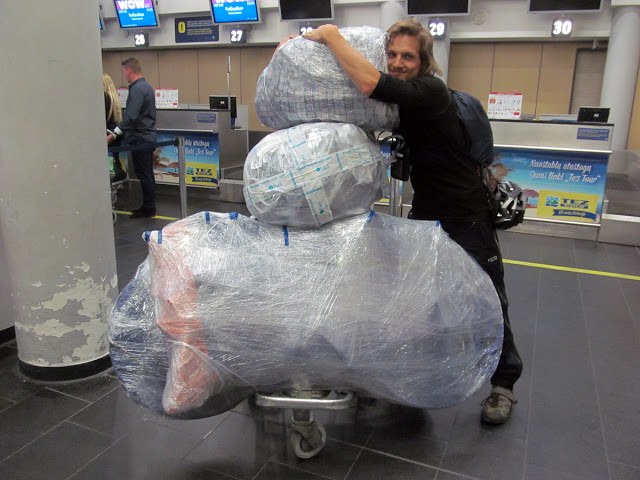
Пройдя регистрацию и досмотр, решили развлечься просмотром прогноза погоды. Середина июля в Акурейри: + 2, мокрый снег. Прелестно!
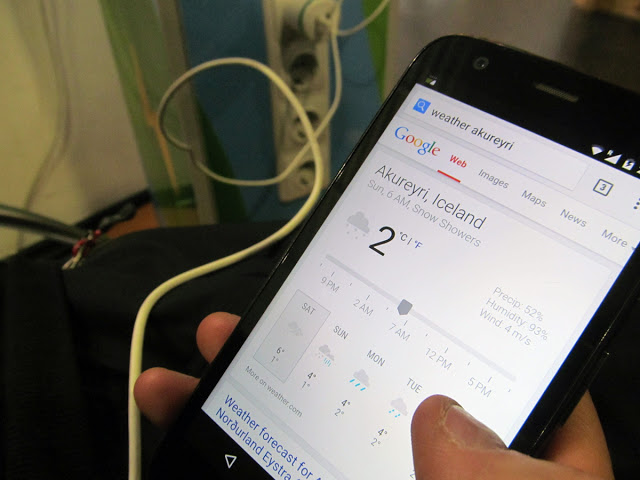
День 2
19 июля Привет, Исландия! Привет, Рейкьявик!
Пробег: 11 км
Вылет поздний (в 23.25), время в пути - 4 часа, во сне оно пролетает мгновенно. И вот дисплей экрана показывает, что мы уже над территорией Исландии. Из иллюминатора ни черта не видно, только глубоко синяя пелена (около полуночи, но мы ведь забрались далеко на север).
Самолет сбрасывает высоту и просматривается вид на волшебную страну… Выглядит она правда пока как черная выжженная материя, ну или как новая неисследованная планета! А вокруг плещется бескрайний Атлантический океан.
В пробежке между трапом и аэропортом ощущаем прохладное исландское “здрасте!” Полночь, а аэропорт Кефлавика не спит: людей тьма, не то, что в аэропорту Ставангера.
С велосипедами не церемонятся, может потому что их здесь 10 (с группой литовцев мы прилетели и улетали в те же даты Ловлю своего коня в броске, долетел родненький и вроде бы цел.
Трансфер до Рейкьявика через 6.5 часов. Ходят слухи, что в аэропорту под запретом сон и сборка велов, но верится с трудом: тут и там уставшие тела путешественников, видимо, уже пропустивших через себя все прелести этого сурового острова.
Мы также прикособочились пополам на ледяных железных сидениях. Удовольствия от процесса мало, если не сказать, что его совсем нет: бедро немеет, спина болит, в ухо и ноги дует, а утро всё не наступает.
Литовцы собрались и выдвигаются в путь. 3.30 утра. Рассвет чуть ли не в полную силу. Можно разглядеть окрестности.
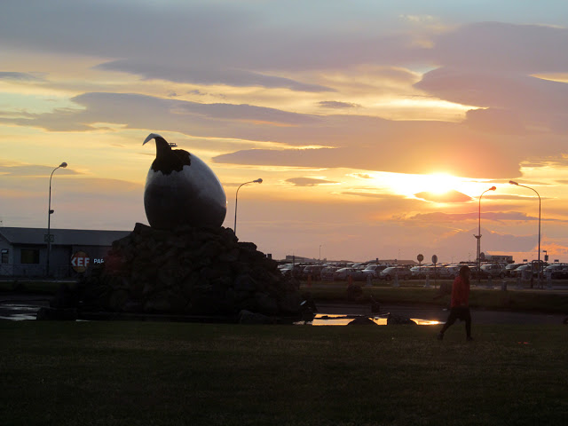
В аэропорт прибывают многочисленные группы туристов: немцы, азиаты, французы. Как выходит - Исландия довольно популярная страна: здесь стар и млад, семьями и в одиночку.
Нас знобит, утепляемся: двое штанов + термуха + флиска + ветрозащитная куртка + баф. Учитывая, что мы еще в здании, выглядит довольно странно.
Ну пора на автобусную остановку. У Лёши Orux maps и картосхема аэропорта. Вывозим тележки, на улице бодрячок, через пару минут я уже не чувствую рук. Идем, лавируя между оградительных столбиков, у Лёши это получается хуже при его габаритах.
_files/IMG_0349.jpg)
А вокруг одни арендокары и сильный ветер. Лёша заходит в один из офисов Rent a car и спрашивает про автобусную остановку, но они have no idea, где она может быть Тележка с велосипедами в это время от ветра выезжает на проезжую часть, с моей тележки падают сумки. Вглядываемся в картосхему, оказывается, север у них оказался внизу, и мы зашли совсем в противоположную сторону. Возвращаемся. Со стороны можно было подумать, что мы угоняем имущество аэропорта.
На остановке нас трое, загружаемся в микроавтобус, сзади которого прицеп, бросаем туда велики и сумки, водитель помогает.
Ну всё, Рейкьявик, встречай! Мы так близко к тебе, как никогда!
По дороге - безжизненный пейзаж, вид которого меня быстро убаюкивает и так я еду всю дорогу до столицы.
А столица, как и все северные города, полна прагматичности. Всё предельно просто и функционально.
Нас подвозят к воротам центрального кемпинга, помогают выгрузиться.
Очередное бррр… Ветер ужасает, такой колючий, он бросает из стороны в сторону кроны деревьев.
Лёша “заселяет” нас, теперь мы можем ставить палатку. Поляна довольно плотно утыкана ими. Встречается невиданные доселе гиганты автопрома.
В кемпинге имеются:
большая общая комната, полная уюта и приглушенного многоязычного шума. Здесь путешественники: взъерошенные, заросшие, немытые, с глубоким задумчивым взглядом, на своей загадочной волне, несуразным прикидом, под впечатлением…
кухня, оборудованная по полной: кетчупы, кастрюли, сковородки, ложки, тарелки, тостеры, моющие средства… Чего еще можно желать?! Поэтому многие тут устраивают праздник живота, выготавливая свои любимые блюда и запахи тут стоят - mama mia!
Также тут есть туалеты с душем, барбекю, оставленный бывалыми путешественниками и ненужный уже им скарб, есть аренда великов и другие плюхи.
На сегодня задача - исследовать Рейкьявик. Поэтому собираем велики, подкрепляемся.
Рейкьявик пустынен. На глаза попадаются современные произведения: некоторые невероятны, некоторые абсурдны. Но в целом город очень симпатичный, запоминающийся, где-то игрушечный, где-то арт-хаусный.
_files/IMG_0378.jpg)
_files/IMG_0397.jpg)
_files/IMG_0454.jpg)
Главная городская церковь потрясающая! В мире остается не так много вещей, способных по-настоящему удивить. Все слишком глобализировано, стерты малейшие поползновения на уникальность. Так вот эта церковь по своему воплощению ну просто нереально выразительна, взгляд приковывает на долгие-долгие минуты любования.
А какой с нее изумительный вид!
_files/IMG_0427.jpg)
_files/IMG_0424.jpg)
О кафе Loki с национальной кухней узнали из документального фильма об Исландии. Заинтересовал, приглянулись к ценам - терпимые. Когда еще выдастся шанс испробовать истинных исландских кушаний.
Заказали тарелку из ассорти бутербродов, суп, хаукарль (настоящая еда древних викингов) и чай. На картинках - всё красиво и аппетитно.
Мда, ну на то они, наверное, и викинги, что способны есть такую гадость.
Либо безвкусно, либо ужасно не вкусно. Послевкусие вызывает рвотный рефлекс. А уж пресловутая акула - на 100% для гурманов-извращенцев.
Я впервые съела свою порцию (у меня был суп) быстрее. Лёша еще долго и мучительно давился своими бутербродами. И заявил, что больше в жизни этой их еды ни-ни.
После такого неожиданно невкусного обеда продолжили знакомство.
Харпа - городской концертный зал. Здание-чешуя. Ничего подобного в своей жизни не видела. Самый фотогеничный объект! Очень впечатляет! На выходе - аутентичная лавка с ручными работами исландских мастеров.
Люблю оригинальность!
Ветер на набережной срывает капюшон, суров и настойчив.
Еще один символ города и в кемпинг, отогреваться и готовиться к предстоящему дню.
День 3
20 июля Ветер, ветер, ты могуч! Reykjavik - Тингведлир (Tingvellir)
Пробег: 61.6 км
Время в движении: 10.30-17.00
Собирались по утру очень долго, около 3 часов. Позавтракали глазуньей и бобами, не хватало только бекона для настоящего английского завтрака.
Остальные кемперы в основном предпочитают тосты с джемом и нутеллой. Неужели это дает энергии?.. Если на машине, наверное, нет разницы.
В путь я надела на себя более, чем достаточно вещей: трое штанов, 2 нижних слоя на тело + куртка, балаклаву, теплые перчатки. Когда дул ветер, было оптимально.
Из Рейкьявика выезжали километров 10. Рельеф присутствовал. Виды менялись медленно, но были прекрасны.
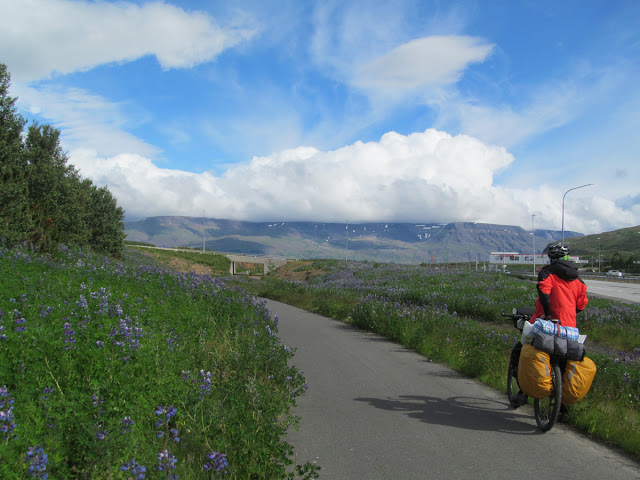
Через километров 15 закончилась ВД и мы покатили по довольно нагруженной трассе №36 + кто-то включил такой нескончаемый поток ветра неимоверной силы. Тяжелое испытание, даже в какой-то степени экстремальное, особенно после проскакивающих джипов или автобусов, которые образуют воздушную пробку. Ты так и норовишь прилечь в кювет или чего хуже - вильнуть на середину проезжей части. В один из подъемом шла пешком, слишком страшно от отсутствия балансировки.
Ветер не прекращался. Бывало он точечно дул в одну часть тела (нос, лоб или щеку), что та теряла чувствительность. Спокойствие находили только у обочины.
Овечки тоже находили укрытие
Сегодня ночевка будет в нац.парке Тингведлир, включенном в список всемирного наследия ЮНЕСКО. Здесь находится разлом меж двух литосферных плит - Североамериканской и Евразийской. С вертолета хорошо видны эти тектонические “морщины” в рельефе.
Также это место примечательно тем, что здесь собирался старейший парламент в Западной Европе - альтинг (с 930 г), было принято христианство (1 000 г) и провозглашена независимость Исландии (1944 г).
Мелкие борозды, трещины повсюду вызывают трепет и восторг. В некоторые из них погружаются дайверы.
Вид с панорамной площадки открывается очень красивый.
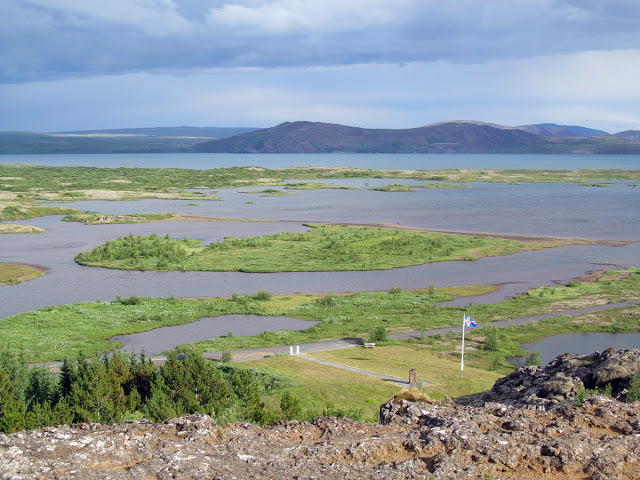
В парке есть водопад Эхсараурфосс
А когда выглядывает солнце, это место приобретает совсем сказочный вид.
Кемпинг уединенный. У берега плавают чудесные птицы. Вид прекрасный. Дышится хорошо.
День 4
21 июля День приятной неожиданности: Тингведлир (Tingvellir) - Geysir
Пробег: 85.8 км
Общее время: 09.30-20.30
Время в движении: 6.24.05
Средняя скорость: 13.4 км/ч
Макс.скорость: 42.3 км/ч
Утро было прохладным и пасмурным, зато как заливались птицы - одна другой интереснее.
Начался второй наш исландский велодень. Что он заготовил нам? Забегая вперед - почти ничего, только в завершении золотой водопад (Гюдльфосс).
Дорога унылая, вот просто до безобразия. Едешь, а вокруг поле, пускай лавовое, но поле, такое бескрайнее. Где-то вдалеке маячат горки. Рельефа достаточно, причем затяжные тягуны + ветер, без него в Исландии никуда. Сегодня он снова в лицо.
Подъезжаем к указателю: 3 км до достопримечательности - пещеры. Дорога гравеечная и мне она совсем не нравится: скорость 7-9 км/ч, стиральная доска с рельефом. Пещера в планы не входила, ушло около 1 часа, так и не поняли ее назначения. В пещере было много мошек и барашки.
Встретили большую бригаду велосипедистов - человек 8. На вид русские, по крайней мере, по сумкам (ПИК). Поздоровались “Hello!”
Автомобилисты на дороге очень вежливые, объезжают по встречке или притормаживают, не сигналя нам, если на ней кто-то есть.
В Логарватне пообедали в забегаловке при магазине. Фаст фуд, однако, в сто крат вкуснее тухлой акулы
Магазин небольшой, 2 пролета, но сколько полезного на квадратный метр - удивительно! Есть необычные хенд мейд конфеты в виде лошадиных какашек, яиц тупиков, северного сияния и лавы.
Лёша в пути, как правило, вырывался вперед то ли от того, что не фотографировал, то ли от надоевшей борьбы с ветром. Когда ожидалось что-то любопытное он терпеливо меня дожидался, дабы я не пропустила поворот, к примеру, на такой скрытый от толп туристов невероятный чарующей красоты водопад.
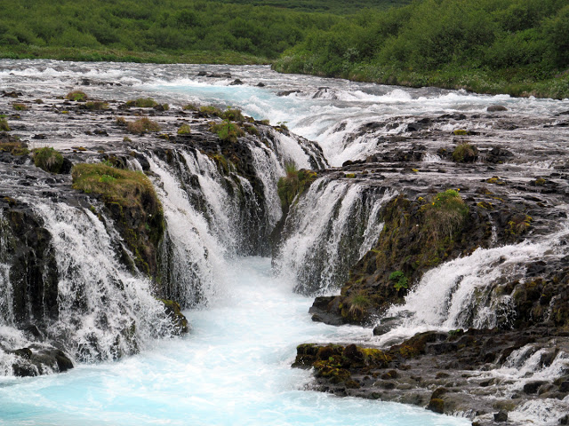
Забава для туристов - прогулки на лошадях или угощение их травкой.
За 7 км от Гейзера нас ожидала засада в виде ремонта дороги. Немного, но под конец дня излишне изнуряющее занятие.
Деятельность Гейзера видна издалека и она притягательна.
Докрутили до одноименного кемпинга: дорого, всё платно (душ, электричество), нет общей комнаты и неприветливый администратор пожилого возраста.
Ночевать будем прям под боком у сопящих бурболок, но увидим их во всей красе только завтра. Сегодня - водопад Гюдльфосс, один из самых живописнейших в Исландии. До него всего 10 км, но тошнили целый час, “спасибо” горкам и ветрюгану-хулигану.
И на таком веле путешествуют по Исландии.
А вот и сама необузданная мощь! Водопад двухступенчатый, масштабный. С ревом обрушиваются его воды в каньон, создавая непроглядную дымку из брызг.
Водопад зачетный, а магазин при нем еще лучше (шучу, конечно), но очень хорош разнообразием сувениров, на которые всегда радостно таращиться.
Обратно долетели за полчаса, а Лёша и того быстрее, с криком Yahooo! промчался еще вначале и только видать было вдалеке оранжевое пятнышко. Еще бы, такое счастье - ветер в спину. Почаще бы такая лафа!
День 5
22 июля Всем попоморщерам посвящается! Или кто любит пожестче: Geysir - берег неизвестной реки
Пробег: 53.9 км
Общее время: 11.30-00.10
Время в движении: 8.02.34
Средняя скорость: 6.7 км/ч
Макс.скорость: 40.4 км/ч
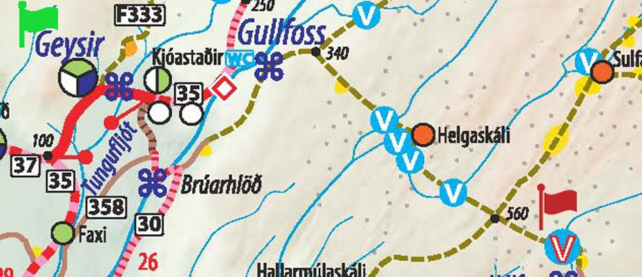
Во всем мире по пальцам можно пересчитать, где воочию вы можете лицезреть одно из действительно восторгающих проявлений вулканизма - Гейзеры, которые в Исландии включены в так называемое Золотое кольцо страны.
Здесь сложно пропустить это место и оно является обязательным пунктом всех туристов на этом острове. В противном случае это можно принять за чванство.
Территория такой активности относительно небольшая. При входе вы можете ознакомиться с познавательной информацией о деятельности гейзеров и иных бурболок и затем вдоволь нагуляться и нафотографироваться. К слову сказать, вход бесплатный, как и к большинству всех природных достопримечательностей Исландии.
Температура высокая, есть ограждения, которые в принципе особо настойчивых не остановят в их желании пройтись поближе к одному из источников. Но себе дороже, можно ненароком и провалиться, и ошпариться.
На сегодняшний день извергающим струи воды и пара является единственный из множества - гейзер Строккур. А тот, от которого собственно и пошло общемировое наименование природного явления - уснул, неизвестно насколько, до следующего землетрясения может быть.
Его по кругу обступают туристы и с замиранием дыхания ждут, томительно наблюдают, как дышит воронка. Она действительно дышит, будто следишь за ее сердцебиением и в какой-то момент надувается боольшой пузырь и лопаясь, выпускает высоченную неудержимую струю (~20 м). Восторг обеспечен всем! У старшего поколения рот открыт даже больше, чем у детей! Восторгу нет предела, ведь Строккур бьет с периодичностью 5-7 минут, у него нет перерыва на обед и на сон.
Мы движемся дальше, лишь забежим в небольшой музейчик, посвященный вулканической активности Исландии (в нем есть даже имитация землетрясения) и лавку при нем.
А лавка похожа на сказочный ларец викинга, так всё красиво и волшебно тут представлено - глаз не отвести! Успела сделать пару кадров, пока консультант не пригрозила мне строго пальчиком.
Зарядившись насколько это возможно положительной приободряющей энергетикой, мы крутили педали в сторону пустошей. Дороги, почти забытой богом - без имени-нумерации, пунктирчиком на карте, на преодоление 42 км по которой у нас ушло 11 часов…
Случайно обнаружили место, где снимали рекламный ролик Inspired by Iceland, вниз по течению реки Хвитау, на которой находится и водопад Гульфосс. Везде можно найти “свои Мальдивы”.
А потом началась она - гравейка - радость на свою пятую точку.
Коровы даже пытались отговорить, уставившись с вопросительными мордами.
Но Лёша был непреклонен
И даже рад…
Джипы придерживались мнения “Ну ее, эту гравейку, нафиг!” и разворачивались прочь
И мы остались почти одни
Пейзажи впечатляли глубиной и безмятежностью
Капризная жена
Почему я не люблю в велопутешествиях гравейку или грейдер? Мне не доставляет ни малейшего удовольствия пересчитывание зубов, костей и позвонков. Меня не удовлетворяет скорость. Меня не радует, что ушатывается любимый вел под нагрузкой велосумок.
Где-то на этой дороге потеряла болт от велобагажника, и он погнулся и кое-как дотерпел до конца.
Не люблю, но надо Там ведь, далеко впереди, в награду будет водопад, даже два, с радугой и такой величественной долиной и дыхание перехватит... И ощущение, что живешь, будет таким непреходящим и всеобъемлющим!
А еще, потом ты будешь вспоминать эту дорогу как одно из самых захватывающих впечатлений о поездке.
Ехали мы ехали, а я всё думаю, а где же брод? И когда увидела его вдалеке, прямо обрадовалась Переживала, что все они пересохли и я не опробую свои неопреновые носки. Но слишком много радовалась - этот даже на карте был не отмечен Так, аперитив, перед основным блюдом.
Потом их было много, так много и разных: в основном по колено, с сильным или слабым течением, со скользким дном или не очень, некоторые состояли из серии подряд идущих друг за другом.
Перед одним из бродов покосился щит с наставлениями автомобилистам, коих мы встретили в количестве 0, сводившимся к вовсе не риторическим вопросам:
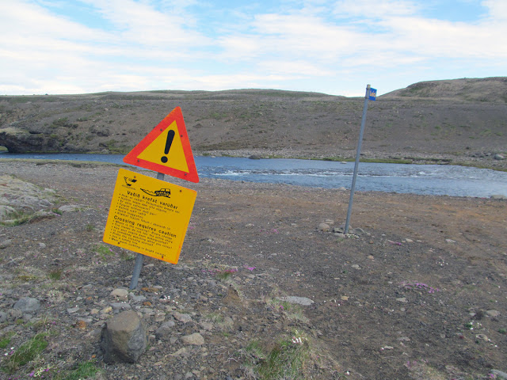
Неопрен замечателен, брод переходить приятно.
Я не знаю, почему мы снимали сумки или где-то переносили велы с поклажей на себе. Излишне беспокоились, как бы они не промочились. Но во многих отчетах, в т.ч. видео-, смелые швейцарцы/русские/французы берут на абордаж броды, проезжая на скорости, или проходя их, не “раздевая” груженный велосипед.
Выглянуло солнышко и вроде всё ничего, но прошло часов 6 - ни души, изматывающее прохождение бродов, этот ужасно назойливый стрекот ЛЭП будто у тебя в голове. Километры не таяли - плелись, а спидометр вообще отказывался показывать скорость при движении в горки от возмущения происходящим.
На одном из спусков упала, ударилась, решила полежать… Так взгрустнулось, соленые капельки слез глотала через нос, в глаз светил луч солнца. Еще этот несмолкаемый стрекот, от которого у меня скоро поедет крыша и начнутся галлюцинации. И мысли: будет ли этому конец? С нами ли это происходит?
Хорошо, что есть напарник. Он всегда с радостью даст пенделя.
А еще мы встретили снежник на нашем пути и на нем следы, кого бы вы думали, велосипедистов (!!), которые меня очень и очень воодушевили продолжать сие недоразумение. Я почти не сомневалась, что эта группа москвичей.
А потом кто-то добрый подсыпал крупных камней на дорогу, что оставшуюся часть мы много шли пешком под ручку с ненаглядным конем.
Чтобы получать от такого удовольствие нужно очень-очень сильно постараться. Я, к примеру, вела внутренний диалог, разговаривала с цветком на руле по имени “Солнышко” и напевала: “ночь пройдет, пройдет пора ненастная…”
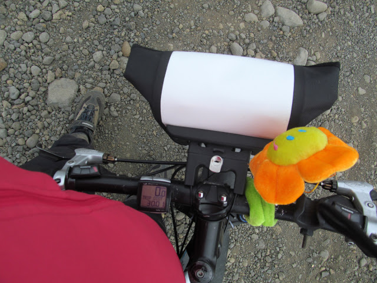
Теперь в горки велы мы затягивали по очереди: Лёша тянул за руль, я подталкивала сзади, потом шли за вторым и картина повторялась. Заунывно щебечащая местная птичка была единственным нашим попутчиком: пиу-пиу-пиу.
Наблюдали красивый закат и крест на горе, как символ этой дороги.
Я думала о велоследах и стремилась увидеть их владельцев. Как доказательство, что всё, что сейчас творится, взаправду и скоро, совсем скоро это закончится. Мы увидим людей, подойдем к ним, поприветствуем, может даже обнимем на эмоциях и скажем спасибо, что здесь мы были не одни.
Показалась шапка Геклы
Ветер усилился - мы преодолели перевал. Близилась полночь.
И показался последний запланированный брод и 4 палатки на противоположном берегу. Я была счастлива. Почти завершили. Они так близко и так далеко.
Хотим сделать рывок, но боимся не управиться до темноты. А брод даже и на брод не похож, река буйная, с тёмной водой. Изможденными и голодными переходить такую было рискованно, поэтому решили делать это с утра. Долго ищем подходящее место под палатку на продуваемой всеми ветрами равнине, с трудом устанавливаем из-за резких порывов ветра, ужинаем и умираем на сон от усталости.
День 6
23 июля Пустошь Смауга: берег неизвестной реки - Ландманналаугар (Landmannalaugar)
Пробег: 74.09 км
Общее время: 09.30-20.30
Время в движении: 7.18.00
Средняя скорость: 10.14 км/ч
Макс.скорость: 50.23 км/ч
Утро на высоте 600 м на лавовой равнине незабываемо. Кажется, что снаружи штормовой ветер или буря, так мутузит тент от палатки. Высовывать даже пальчик совсем нет желания. Но так хочется увидеть единомышленников на том берегу. Выглядываю, а они уже стартуют, только куртки виднеются. Затянули мы подъем.
Больше не медлим, второпях собираемся и выдвигаемся на бродинг.
Этот брод не случайно птичкой побольше на карте отмечен - широк и стремителен. Я сделала к своему стыду только 1 ходку, т.к. в середине реки я сильно притормозила, боясь ступить на следующий шаткий камень под водой. Вода переливалась выше колена, где не было неопрена и коленка стала подмерзать, от чего мне стало еще страшнее. Весь испуг был на лице. Так думала и буду стоять, ощущая всю силу потока ледниковой реки, обдуваемая ветрами до поры до времени. В какой-то момент ступор прошел и я смогла дошагать до долгожданного берега. А Лёша работал за двоих.
Нацепили сумки и вот мы снова на конях, по курсу - водопад Хайфосс, на горизонте - Гекла, под колесами - в меру укатанная гравейка.
Водопад Хайфосс зрелищный, расположен как раз вниз по течению той реки, которую мы бродили. За много тысяч лет выдолбил себе головокружительное каньонообразное ущелье. Временами может подмигнуть радуга, настолько ее пребывание скоротечно.
Наконец-то мы покидали территории господства ЛЭП с их кошмарным жжужанием и потрескиванием.
По ходу скорректировали маршрут, решили дать круга по асфальту и лишь небольшую часть проехать по гравейке до Ландаманналаугара.
Пока ехали в зрительной видимости от Геклы встречались искусно застывшие остатки лавы (последний раз извержение было в 2000 г.). Но чем дальше, тем печальнее становились пейзажи. Не на чем глазу остановиться. Крутили долго, в горку - с горки. Уныние не покидало меня, а Лёше нравились эти лунные картинки перед глазами, любовался ими.
Я предполагала, что к Ландаманналаугару ведет интересная дорога, но что настолько немыслимые виды будут сопровождать нас в пути - отличный подарок этого дня! Рельеф, дорожное покрытие (лава, вулканический вязкий песок, камни, грейдер), дождь тоже не давали скучать.
С высоты увиденное лавовое поле выглядело словно через него пробивались подземные гигантские жители. Тут и там перемежались спокойные участки с всклокоченными грудами запекшейся лавы. Будто здесь была война миров. Может при извержении что-то подобное тут и происходит. Невероятно!
_files/IMG_1112.jpg)
Притаившаяся Малифисента
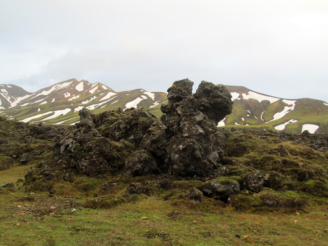
И вот показалось поселение, похожее на деревушку Тал в Гималаях, вид на которую распахивается после долгого подъема, или волшебный Хоббитшир. Как собственный уникальный мир, место тихое и безветренное. Вокруг пятнистые разукрашенные холмы, разлив реки в сотни рукавов, ядреная зелень травы и пестрые палатки.
День был утомителен, в следующем ожидалось много чего любопытного, неожиданного, яркого и удивительного.
Мы завалились спать без памяти, чуть отмокнув в горячих источниках.
День 7
24 июля Прогулка по вулканам: Landmannalaugar
Находили ~13 км.
В полной мере согласна с тем мнением: “тот, кто не был в Ландманналаугаре - не видел Исландии.” Холмы, состоящие из риолита, окрашены здесь в самые чудесные цвета: красный, оранжевый, болотный, фиолетовый, бирюзовый и десятки других оттенков. При солнечном освещении впечатления от этого места не передать никакими словами.
От кемпинга отходят множество треккинговых троп разной протяженности и длительности, тут можно оставаться на неделю и путешествовать по лабиринтами этого вулканического королевства.
У нас был целый один день и мы решили по-максимуму обойти близлежащие земли, а вечером предаться релаксации в природных купальнях.
Очень хотелось преодолеть маршрут 6, но успели лишь 2 и 3. Ведь, когда тебе открывается панорама всего этого исключительного мира, ты не можешь пошевелиться, настолько он грандиозен и нереален, будто иллюзия. Картина одного из импрессионистов или декорации к фильму о далеком будущем.
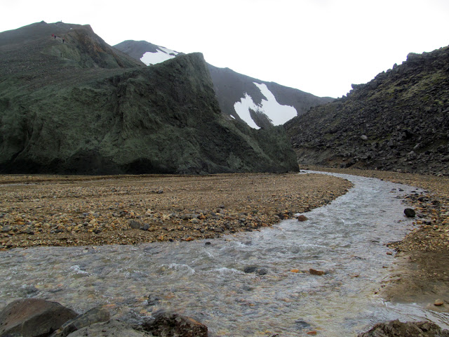
Почувствуй разницу бродинга без неопрена
Обнять и греться
Взбираемся на смотровую площадку по снежному “проспекту”
Сопровождающие виды
Вдалеке тропа по 6му маршруту… Не в этот раз, а жаль.
Ловушка
Лёша представил, что он типо на Марсе
_files/IMG_1290.jpg)
Оазис
Лавовое поле, сформировавшееся в 1477 г.
Как за каменной стеной
Контрасты. Идем кипятиться!
Кто-то уже откипятил себя
Горячие источники - это самое прекрасное, чем может завершится день треккинга в Исландии, да и не только треккинга
День 8
25 июля 106 км на гречке с тунцом или Highway to Hell-а: Landmannalaugar - Hella
Пробег: 106 км
Общее время: 10.30-20.30
Время в движении: 7.45.00
Средняя скорость: 13.82 км/ч
Макс.скорость: 36.91 км/ч
С утра мы еще раз посмотрели на карту за завтраком. Маршрут (дорога F261) с набором большей высоты, снегами и бродами ух как сильно манил… Хотелось приключений, таких, прям на грани! Но потерянный где-то болт на той самой "пунктирчатой" дороге к Хайфоссу и погнутая ввиду этого ножка багажника не дала провернуть первоначально намеченный план… Когда-нибудь мы вернемся, чтобы восполнить этот пробел
С москвичами, “знакомыми” по той забытой дороге и моими вдохновителями, мы таки встретились прошлым днем! Я светилась от счастья и благодарила. Мы обменялись впечатлениями Когда встречаешь людей твоего кроя, воспринимаются они априори как родные.
Этим утром группа уезжала к Годафоссу на север. Хотели штурмовать центр, но дороги из-за снежной зимы и талых ледниковых вод были еще закрыты. Один из участников, Дмитрий, напоследок пожелал доброго пути и сказал: “Может еще увидимся…”
Дорога F225 по карте не представляла трудностей: лишь пару бродов и никаких горок. Зато была полна шикарными пейзажами.
_files/IMG_1400.jpg)
Погода ухудшалась: все пробирающий холод крепчал, накрапывающий дождь усиливался. Возле Геклы погода стала совсем свирепой. Нам надо было ехать прямо на черную густую беспросветную тучу.
Ехать в туче с градом - ни с чем не сравнимые ощущения. Хотя чем-то напоминает ПГ “Активная зона”. Мокрым, хоть выжимай, превращаешься в 2 счета. Руки дубеют, только ноги продолжают интенсивно педалировать, чтобы выбраться из этого ада. Глаза смотрят вниз, т.к. глядя вперед, лицо полностью заливает ливнем. А градины больно долбят в прорези шлема и по шее, будто хотят чему-то научить. Длится это веселье небес на дороге минут 20.
Мы выбрались на асфальтовую дорогу 26, которая приведет нас к главной трассе 1. Боясь быть настигнутыми этой суровой тучей вновь, по видимому сформировавшейся над Геклой, мы несемся прочь, не делая остановок на обед и отдых. Впереди идеальный асфальт - крути себе да крути. А обсохнем по ветру. Подходящих кемпингов по пути, кроме, как в городке Хелла не будет, до него 40 км.
На трассе 1 встретило непривычно активное движение автотранспорта и снова стал поливать дождь. До Хеллы оставалось совсем немного.
В кемпинге к счастью была теплая и сухая общая комната с кухней. Расставив палатку, мы сходили в магазин, вкусно поужинали и улеглись спать.
День 9
26 июля Трасса 1: Hella - Skogafoss
Пробег: 66.5 км
Общее время: 12.00-18.20
Время в движении: 3.59.22
Средняя скорость: 16.67 км/ч
Макс.скорость: 34.28 км/ч
Каждое утро должно начинаться с добротного завтрака
Сэкономив на вчерашней дороге целых полдня, а то и больше, учитывая ситуацию на дороге 261 после снежной зимы, у нас появилась возможность равномернее распределить время на осмотр прекрасных водопадов и более праздное вкручивание к ним.
Теперь единственным нашим трактом будет трасса №1, до Vika излишне нагруженная. Промежуточная точка нашего путешествия - городок Hofn (364 км), от него на автобусе мы забросимся на север страны.
Сам путь не очень интересен. Кругом поля, одни поля.
На горизонте архипелаг Вестманнаэйяр, который в народе зовется Северными Помпеями из-за извержения 1973 г. К нему отправляются паромы и даже летают самолеты с главного острова. Он очень живописен и необычен, т.к. находится в зоне сейсмологической активности. То остров новый из океана появится, то вырастет гора
Фермы и поселения выделяются из зелени белыми фасадами и красными крышами.
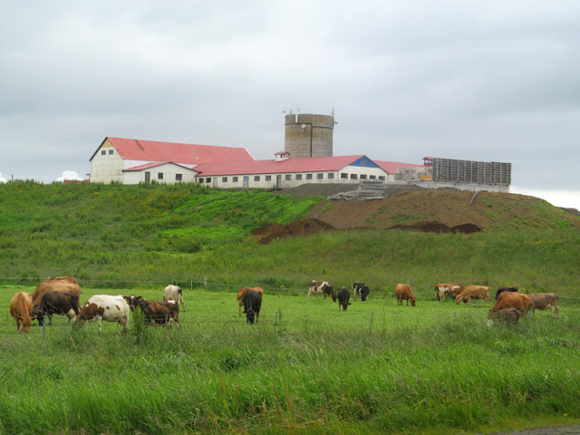
Мы подъезжаем к водопаду Сельяландсфосс. Водопад прыгает со скалы в 60 м. За ним образовался грот, где с удовольствием прогуливаются все не испугавшиеся принять бодрящий легкий душ из его брызг.
Бродяга-гитарист Смари Тарфур, решивший слиться с природой, создает волшебную атмосферу.
Выдвигаемся к еще одной визитной карточке страны - водопаду Скоугафосс.
Мы едем вдоль утеса - бывшей береговой линии. Погода переменчивая. Проезжаем музей, посвященный шутнику леднику-вулкану Эйяфьядлайёкюдль, напустившему излишне много дыма и пепла в 2010 г.
Скоугафосс встречаем неожиданно: на фоне его мощи конная прогулка по реке!
Останавливаемся тут же в кемпинге. Пока готовим чай, болтаем с парнем из Майями и его спутницей по автостопу из Швейцарии. Рассуждаем, какие кемпинги зачетные, а какие так себе. Мнения не совпадают
Согревшись, прогуливаемся к водопаду. На стенде узнаем впечатляющие легенды и о том, что здесь есть тропа, которая ведет аж к самому Ландманналаугару.
Из вики: на восточной стороне водопада, тропа, специально проложенная для туристов, ведёт вверх к перевалу Фиммвюрдухаулс, который находится между ледниками Эйяфьядлайёкюдль и Мюрдальсйёкудль. Затем тропа спускается с другой стороны великолепной долины Тоурсмёрк, названной в честь скандинавского бога Тора.
Что интересно, что Скоугафосс - это лишь один водопад из разнообразнейшего множества на этой тропе. И увидев один, непременно хочется добежать до следующего, как-будто кто-то заколдовал эту тропу. Все водопады по-своему прелестны и уникальны. Потрясающее место!
Лёша был устат и хмур, поэтому мы прошли совсем немного, но с мыслью вернуться сюда обязательно!
Скоугафосс
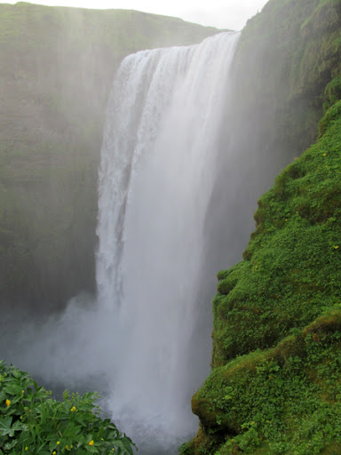
День 10
27 июля Пальцы Атлантического тролля: Skogafoss-Vik
Пробег: 67.7 км
Общее время: 12.30-21.20
Время в движении: 4.39.55
Средняя скорость: 14.51 км/ч
Макс.скорость: 56.88 км/ч
Сегодня мы увидим океан! Впервые за всю жизнь! И вообще сегодня будет много вкусностей.
По дороге к мысу Дурхолей и недалеко отъехав от Скоугафосс можно свернуть направо и через пару километров наткнуться на останки американского военного самолета. Что он здесь забыл и почему до сих пор здесь - загадка (но есть версии - http://alexeyosokin.livejournal.com/113331.html) Зато можно сделать несколько постапокалиптических кадров. Ради этого сюда и сворачивают, трясясь по не укатанной вулканической гравейке.
По дороге к мысу ветер сильно дул в лицо и мы делали частые перекусы сухим кормом
Мыс Дирхолей является самой южной материковой точкой Исландии, он запоминается необычными формами, выточенными деятельностью воды и ветра, черным пляжем, приятной на босую ногу галькой и видами на безбрежный горизонт. А еще милыми тупиками - неуклюжими с виду птицами, но ловкими на охоте за добычей.
_files/IMG_1719.jpg)
Не доезжая совсем немного до Вика, у побережья поджидала еще одна вкусность, ради которой нужно было отклониться на несколько километров от заданной траектории. И это с горочки на горочку _files/tongue.gif) Но никогда, никогда не стоит пропускать интересное, насколько уставшим ты себя не ощущаешь. Кто знает, когда тебя занесет в эти края в следующий раз. Но никогда, никогда не стоит пропускать интересное, насколько уставшим ты себя не ощущаешь. Кто знает, когда тебя занесет в эти края в следующий раз.
Местечко Рейнисфьяра
Вик предстал уютным небольшим городочком, как и все северные городки. Аккуратный и простой.
Кемпинг в Вике красивый, многотерассный, с бесплатным душем и классной кухней. И вид из палатки хорош - пальцы Тролля, океан... Но, конечно, этот кемпинг не подойдет тем, кто страдает антропофобией
День 11
28 июля Вкручивая в ритме с ветром: Vik- Киркьюбайярклёйстюр (Kirkjub(e)jarklaustur)
Пробег: 82.29 км
Общее время: 11.30-20.00
Время в движении: 4.27.34
Средняя скорость: 18.45 км/ч
Макс.скорость: 40.77 км/ч
С утра заряжало солнце, перед отъездом посетили пляж с черным песком близ Вика, где загорали люди в одежде, ели морожко и прогуливались вдоль игривых волн.
В этот день нам дико повезло с ветром. Он был на нашей стороне. Летели, как птицы. Можно было предаться 100% наслаждению снежных шапок языков ледника Мюрдальсйёкудль на фоне бирюзовых морей люпинов, бескрайних плюшевых лавовых полей (извержения вулканов Катла и Лаки далеких 17-18 вв. Извержения вулкана Лаки 1783-1784 гг. продолжалось на протяжении 8 месяцев(!)
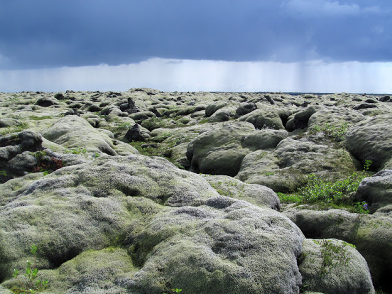
На этой дороге нам снова пришлось столкнуться с тучей, только неопреновых носков, увы, не было. Леденящая тело вода струей проникала на все открытые участки тела и это было сравнимо с электрошоком.
До Клойстура оставалось порядка 30 км, мы успели обсохнуть до нитки и еще прогулялись по восхитительнейшему Гранд Каньону в миниатюре Около 100 метров глубиной и длиной около 2х км. Породы, которыми сложены отвесные стены ущелья, насчитывают около 2х миллионов лет! А само формирование каньона - 9 тыс.лет. (конец последнего ледникового периода). “Вода камень точит”, так и есть.
После мы отправились в единственный в городе с "Невыговариваемым названием - Киркьюбайярклёйстюр" кемпинг.
Вот так выглядит человек, который впервые за 10 дней велопохода по северной стране съел кусок свежеприготовленного стейка Сам стейк сфотографировать не успела, т.к. был уплетен за 2 щеки на раз-два
День 12
29 июля Мертвые земли: Киркьюбайярклёйстюр - Скафтафедль (Skaftafell)
Пробег: 72.52 км
Общее время: 11.00-19.00
Время в движении: 4.54.12
Средняя скорость: 14.78 км/ч
Макс.скорость: 38.39 км/ч
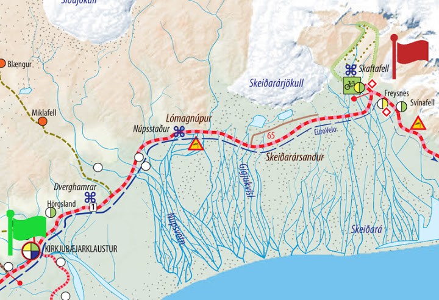
С утра было в который раз солнечно - это везение. Сегодня по дороге нас ожидали те самые Dangerous winds в песчаной пустыни, если судить по карте. А пока же можно было любоваться зелеными утесами, красивыми водопадами, чудесными геологическими формами.
По дороге встречались со многими и многими велосипедистами: с кем-то приветом в улыбке и выкинутой пятерне, с кем-то в разговоре. Кто-то путешествует уже 1.5 месяца, кто-то приезжает уже не впервые (впервые жуть как не повезло с погодой: снег, туман, ураганный ветер). Все весьма и весьма счастливы и беззаботны.
Пример идеального кемпинга. В нем есть абсолютно всё для отдыха уставшего путника.
Впереди показалась темная и свирепая гора Лоумагнупюр, как затвор между живым и мертвым миром. Так оно и вышло. Мы миновали ее и по обе стороны от дороги были совершенно черные земли. Надеялись увидеть самый большой ледник Европы - Ватнайёкюдль - по левую руку (его язычок, но самый первый на нашем пути). Но всё было черным-черно.
На перекус остановились на обочине, укрывшись великами с сумками, но через пару минут песок был на бутерах и на зубах. Попробовать Исландию на вкус в наши планы не входило, но пришлось.
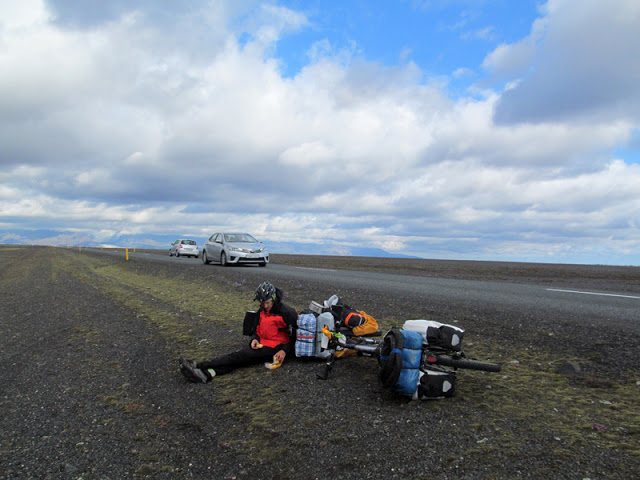
Лёша не наелся нашими припасами с песком и решил отведать чего покрепче, да посытнее.
Туалетов на всем этом бескрайнем пространстве не просматривалось и мы пошли искать его. И тут мы поняли, что всё это время ехали вдоль ледника, только его хорошенько припорошило вулканической пылью, что с виду и не распознать.
Мы снова вернулись на трассу, впереди замаячил Скафтафедль - нац.парк, где мы проведем дневку.
По пути пересекали еще множество рек от талых ледниковых вод. И невероятно длинный мост, который в 1996 г. был разрушен.
“При извержении вулкана Grimsvotn в реку с ледника попала огромная масса воды (50 000 кубометров в секунду) и льдин, которые уничтожили часть трассы номер 1 вместе с мостом через реку. К счастью, никто не пострадал. А напоминанием об этом событии служат остатки железных балок разрушенного моста рядом с дорогой, не доезжая немного до поворота на Skaftafell”. Взято отсюда - http://forum.awd.ru/viewtopic.php?f=1204&t=234159&start=20
Кемпинг в Скафтафедле необъятный, многие останавливаются здесь для пешки на несколько дней по тропам или для участия в турах на ледник. Рядом инфоцентр с кафе. Выбираем место поскорее, расставляем палатку и мигом в нее, т.к. над кемпингом сердито нависла большущая синяя туча. Интересно, какой будет погода завтрашним днем…
Малая часть кемпинга в Скафтафедле утром следующего дня
День 13
30 июля Достучаться до ледника: Скафтафедль (Skaftafell)
Получилось около 17.5 км
Распахнув тент палатки, открылся безупречно чистый вид на окружающее , в особенности внимание привлекал переливающийся на солнце снежный щит гор.
Сегодня быть треккингу, да еще какому! Со скалолазанием
В Скафтафедле существует десяток треккинговых маршрутов протяженностью от 2 до 30 км. В инфоцентре можно приобрести карту и по ней ориентироваться, куда навострить свой нос. Почти на каждом из них вы увидите могущественные ледниковые языки Ватнайёкюдля, водопады, захватывающие панорамы, лагуны с дрейфующими льдинами, разноцветные риолитовые горы.
Мы решили прогуляться по холмистому массиву, заключенному меж ледниками Скафтафедль и Морсар. Наш маршрут вбирал в себя разные участки нескольких треккинговых троп.
Взяли 2 сумки, доставшиеся нам от Vilnius Challenge: в одной - еда, в другой - флиски и дождевик, куда ж без него в Исландии. На себе термо + ветрозащита + баф.
Шли по корневистой тропке сквозь чащу так редко встречающихся в Исландии деревьев: невысокие, неказистые, но всё же деревья. Навстречу нам пробегали похожие на спартанцев приветливые мужчины. Вот какая подготовка должна быть перед ПГ - вниз-вверх в хорошем темпе по горкам!
_files/IMG_2089.jpg)
Ледник играл в моргалки: то выглянет в просвет, то снова его нет.
Чем выше взбирались, тем всё более захватывающие становились пейзажи. Эти трещины, похожие на толстую слоновью кожу, эти льдины в водах натаявшего озера, а вверху - заснеженные вершины, под ногами - зеленая сочная трава.
Много останавливались на полюбоваться. Все-таки раз в год на такую красотищу - мало. Хочется, чтобы это было рядом, в шаговой доступности.
Подниматься в куртке жарко. Ветер временами активен, но чаще штиль. Дорожка ведет вдоль ледника, иногда подходя к краю, чтобы дать в полной мере насладиться его красотой и мощью.
Так мы дошли до Glama, тропка ответвлялась вправо еще выше по сыпухе. Время только приближалось к полудню, поэтому мы не преминули отправиться на скалистую вершину Кристинартиндар (1126 м).
Из прямоходящих мы постепенно превращались в четвероногих. Подъем заставил понервничать, порой приходилось долго думать, куда сделать следующий шаг и за что более-менее устойчивое зацепиться рукой. Один мужчина не очень хорошо над этим раздумав, чуть не скатился по осыпи далеко вниз. Вид у него был ошеломленно-сумасшедший.
Зато панорама, какая панорама открывается с этой высоты! Бесподобная! Тут тебе и равнина с невообразимо меандрирующими ледниковыми речушками, и вечные снега, и морена, и вызывающие благоговейный трепет неприступные скалы-великаны! Как приятное сновидение, с которым не хочешь расставаться. Путешествовал бы по его сказочным тропам бесконечно!
В какой-то момент раздался неимоверной силы грохот, учитывая что он происходил на расстоянии примерно в 25-30 км. Все, кто был на вершине, мигом замерли в изумлении, раскрыв рты, как дети. Это откололся кусок ледника, будто чихнул гигант Ватнайёкюдль. Присутствовать при таком - чудо! Это великое чудо - наблюдать за жизнью природы. Невозможно подобрать слов, чтобы описать, что испытываешь! Это и восторг, и страх одновременно! Мурашки по телу с замиранием дыхания!
_files/IMG_2182.jpg)
Википедия говорит, что здесь находится самый высокий водопад Исландии - Морсаурфосс, 227.3 м. Хотя он мало различим в этом пейзаже и мало доступен. Поэтому практически во всех интернет-источниках самым высоким остается все-таки Глимур (196 м).
На вершине мы провели около часа, погода очень способствовала. Облака временами пытались съесть вершины, но в этот день у них это плохо выходило.
Пришло время сбрасывать высоту на 600 м, но мы не огорчались, т.к. впереди ожидал водопад Свартифосс. Чем хороши горы, что тут не приходиться скучать: во все стороны, куда ни бросишь взгляд - очень красиво!
Зебристая земля
Пообедали на конгломерате и только двинулись дальше в путь, как вновь вдалеке прогремел ревом рухнувший обломок ледника. Эта мощь чудовищно заряжает энергией, даже на приличном расстоянии!
Вновь оказавшись на маршруте S3 мы старались убежать от компании немецкоговорящих пенсионеров, которые бурно что-то обсуждали. Но я не могла не останавливаться на “пощелкать”, а они двигались очень бодро. Так и шли, бок о бок до поворота на Свартифосс, который был не вполне однозначным
Свартифосс хоть и не велик, но создал вокруг себя поистине великолепные декорации, которые заставляют подолгу им любоваться. В пасмурную погоду они выглядят еще более грандиозными, но т-т-т. Погода хороша, пусть такой и остается.
Завершили сегодняшний треккинг еще двумя водопадами по дороге к кемпингу, ужином и отдыхом с превосходным видом на горы национального парка Скафтафедль.
День 14
31 июля Господин вмордувинд: Скафтафедль (Skaftafell) - Hrollaugssta(d)ir
Пробег: 83.12 км
Общее время: 10.00-20.30, из них 3 часа в Йёкюльсаурлоун (Ледяная Лагуна)
Время в движении: 6.02.29
Средняя скорость: 13.75 км/ч
Макс.скорость: 33.67 км/ч
_files/jokulsarlon.jpg)
Сегодня по курсу долгий вкрут по трассе 1, благо по левую сторону будут постоянно выглядывать сверкающие ледники помеж горных хребтов и зеленых полей. Изюминкой станет водная прогулка по Ледяной лагуне - пристанищу сотен айсбергов, некоторым из которых десятки тысяч лет.
Если пару дней назад нас удачно пронесло через песчаные пустоши на подъезде к Скафтафедлю, то сегодня мы в полной мере и даже излишне ощутили бодрящую исландскую свежесть в ужасающих порывах ветра и просто стабильного непрекращающегося вмордувинда.
Скорость по плошмяку достигала (!) следующих значений: 7-8-9-8-7-8-7-6 км/ч при малой звезде спереди.
Шоры на глаза в виде капюшона, упершись рогами в асфальт, мы медленно, но верно продвигались к своей цели. В какие-то моменты, когда ветер был боковой в направлении дороги, мы шагали с верным конем, т.к. держать баланс совсем не получалось и от возникающей воздушной пробки после проезжающих машин, тебя словно безжизненный листок выносило на середину дороги, а то и вовсе могло приложить на бочину. Велосипедисты, путешествующие в обратном направлении в этот день, были полны сил и оптимизма, подбадривали нас и с легкостью проносились вперед.
Этому испытанию не было видно конца, изнеможение наступило очень быстро. Последние километры до Ледяной лагуны я тащилась буквально на зубах.
Прежде чем достигнешь “главного въезда” к Лагуне, можно быть съеденным любопытством, т.к. очень много автомобилистов паркуются раньше времени, оно то и правильно: меньше людей - приятнее восприятие.
Километров 60 мы ехали около 5 часов, по равнине и асфальту. Но вот мы здесь, у Ледяной лагуны, и она в лучах Солнца прекрасна! До прогулки на амфибии у нас полно времени: можно перекусить и вдоволь нафотографироваться, что при просмотре количества сделанных кадров дома будет дурно. Вид лагуны постоянно изменяется, айсберги дрейфуют туда-сюда, переворачиваются, некоторым удается отправиться в странствие по Атлантическому океану. Здесь обитает много птиц и морских котиков.
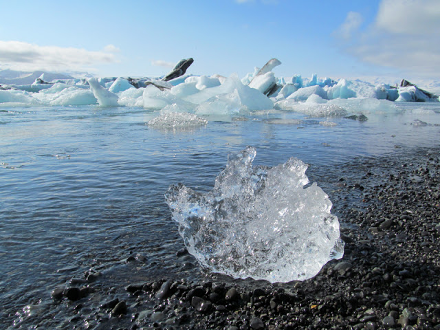
Неподалеку от места продажи билетов на амфибию, есть кафе, где можно отведать наваристого супа с булочками. Вторая порция идет почти в 2 раза дешевле Проносить свои ссобойки внутрь запрещено, т.к. “this is not picnic area”.
Справка из вики: Лагуна возникла в 1934-1935 гг., ранее ледник вплотную подступал к океану. Но с повышением температуры, начиная с 1925 гг. Ватнайёкудль активно стал таять и от него начали откалываться айсберги различных размеров (90% объема айсберга находится под водой). В 1975 году площадь лагуны была около 8 кв.км;, сейчас же она достигает 18 кв.км. Это второе по глубине озеро Исландии с глубиной до 200 метров (660 футов).
На озере снимались некоторые сцены фильмов «Вид на убийство» (1985), «Умри, но не сейчас» (2002) и «Бэтмен: Начало» (2005), а также несколько рекламных роликов.
Лагуна — самая низкая точка Исландии, находящаяся в 200 метрах ниже уровня моря.
Пришло время познакомиться с лагуной поближе. Время прогулки около 30-40 минут. Об интересных историях в жизни лагуны повествует потомок викингов, он же угощает льдом многотысячной выдержки
Нашей группе гид сообщил, что мы счастливчики - ухватили шанс побывать в лагуне в солнечный день. Перед этим между гидом и капитаном амфибии состоялся такой диалог:
- О, а ты не знаешь, что это за желтое пятно на небе?
- Нет, первый раз его вижу
Такова исландская действительность.
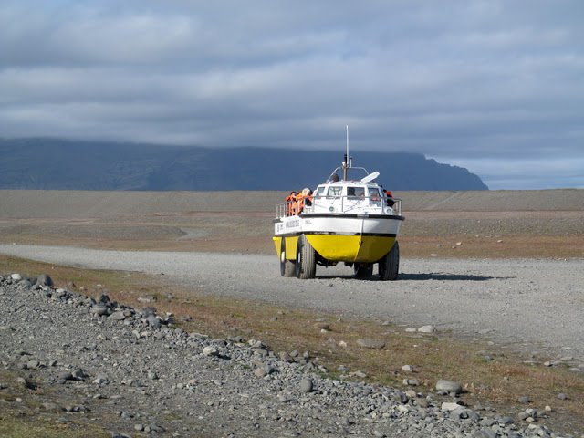
Большим упущением было не заглянуть на пляж с черным песком и выплюнутыми океаном льдинами. Говорят, что это даже впечатляет куда больше самой ледяной лагуны + немноголюдно там. Помечаем “на следующий раз”
Ночлег находим спустя 14 км после лагуны около гестхауса в Хроллаугстадире: чем дальше от Рейкьявике, тем поселения встречаются реже. Кемпинг не дешевый: 2400 крон за человека (~17 евро), зато горячий нелимитированный душ, уютная большая кухня и обеденный зал. Тепло и безветренно! Чего еще можно желать на этой Айс земле.
День 15
1 августа Удивительный восток: Hrollaugssta(d)ir - H(o)fn - Egilssta(d)ir
Пробег: 60.89 км
Общее время: 08.45-13.30
Время в движении: 3.56.50
Средняя скорость: 15.42 км/ч
Макс.скорость: 39.37 км/ч
Один из самых ранних подъемов и выездов (8.45) сегодня. А всё потому, что к вечеру надо попасть в городок Хофн (~ 65 км) на самом юго-востоке страны для дальнейшей транспортировки нас на автобусе до Эгильстадира (~190 км). А чуть дальше - Детифосс, считающийся самым мощным водопадом Европы, комариное озеро с пепельным кратером, пещера с горячей водой, псевдократеры, футуристичная геотермальная станция и северная столица.
В дороге до Хофна нас по-прежнему сопровождают ледники по левую сторону и океан - по правую. Утро прохладно, погода переменчива, с пейзажами везет не всегда.
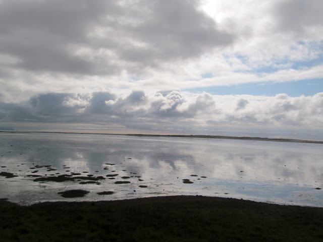
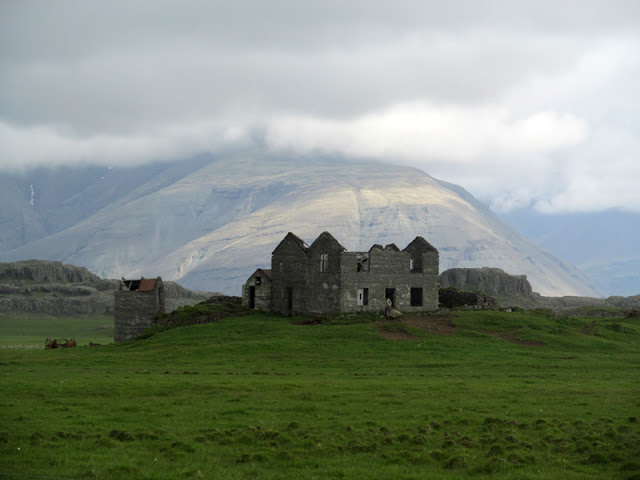
Над Хофном будто царил другой атмосферный фронт: небо было ясным, сочно голубым, солнце светило отчетливо. Приехали совсем заранее. Есть возможность не спеша пообедать, закупиться провиантом, прогуляться по городку. Население здесь живет рыболовством, ресторанным бизнесом. Ежегодно в конце июня-начале июля проводится Фестиваль рыбака («Лобстер-фестиваль»).
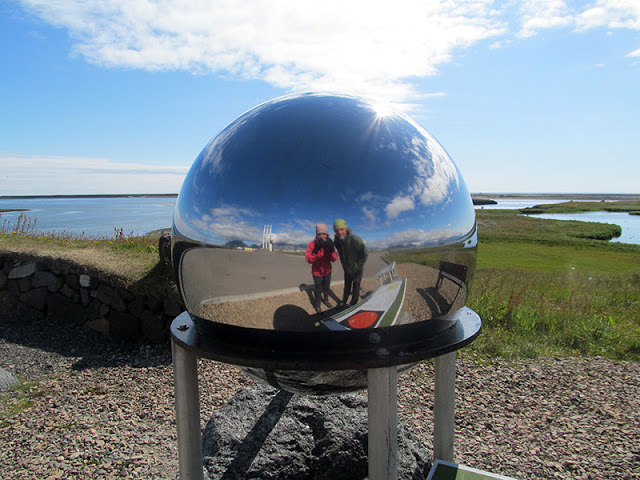
Подошло время отдохнуть еще в большей мере, отдавшись в объятия автобуса. Автобус приехал огромный, на 45-50 мест, а путешественников собралось целых 7, из них 5 с велосипедами Велы заняли весь багажный отсек (да, мы не разбирали их от слова “совсем” Потом по дороге добрали еще 3х… велосипедистов
Водитель был добряк (татуированный и с пузякой), даже разрешил 2 вела в салон занести. А еще пропускал внутрь только после того, как пассажир правильно произносил конечный пункт назначения - Egilsstadir
И всё вроде хорошо, и можно расслабиться, любуясь восточными фьордами из окна. Но в одном городке делаем длительную остановку и… меняем наш автобус на автобус поменьше… с прицепом. Ух, этого мы никак не ожидали. Совместными усилиями с испанскими велосипедистами справляемся с запихиванием велов и многочисленных сумок в прицеп и можно снова любоваться пейзажами.
Со следующим водителем нам несказанно повезло. Хотя они все в Исландии хорошие.
Это седовласый старик (на предыдущей фото он есть) в шортах, рубашке на выпуск и сандалиях, с хвостиком и непростым взглядом. Чем-то он мне напомнил Роберта Планта. Всю дорогу он ненавязчиво рассказывал истории прибрежных деревушек, пару раз останавливался по собственной инициативе, чтобы дать возможность запечатлеть нам прекрасные виды фьордов в закатном свете, в одном из тоннелей пел, угощал хаукарлем и заверял, что они действительно лущат его как у нас семки за пивом. Летом он работает в Исландии водителем, а зимовать улетает в Испанию, где у него есть дом.
Это было чудесное путешествие. Исландские фьорды завораживают ничуть не меньше норвежских И было бы больше времени - проехали бы их на велосипеде.
Мы прибыли в Эгильстадир прямо к кемпингу, водитель оставался на ночлег здесь же и завтра мы с ним отправлялись к водопаду Детифосс.
Когда перетаскивали вещи к месту стоянки, повстречали, кого бы вы думали - ту самую московскую велогруппу! Я несла по велоколесу в руке и вид, признаюсь, со стороны был странный (вел оставался у автобуса еще, скрытый от поляны с палатками служебным помещением).
Как же я их безумно была рада видеть, что чуть с этими колесами к ним и не побежала. Фантастика! У каждого был свой маршрут, и наши пути в Ландманналаугаре разошлись и вот мы снова встретились! Чудо! Нам было чем поделиться друг с другом. Чувствовала, что я разговариваю с давно знакомыми мне близкими людьми, в глазах то тот же восторг, те же эмоции! Они побывали на Аскье (!!) https://en.wikipedia.org/wiki/Askja и захватили немного жестких иногда бездорожных дорог, скатались налегке к фьорду Сейдисфьордюр, поведали про невсегда гостеприимных лендлордов. Завтра на автобусе они отправлялись в Хофн и оттуда своим ходом по трассе 1.
Мы поужинали и завалились спать. Приятный был день на приятных людей.
День 16
2 августа Да здравствуют бурболки: Egilssta(d)ir - Dettifoss - Krafla - Hverir - Reykjahl(i)(d)
Пробег: 68.26 км
Общее время: 13.10-20.10
Время в движении: 3.51.32
Средняя скорость: 17.69 км/ч
Макс.скорость: 60.22 км/ч
_files/day16.jpg)
День предстоял быть насыщенным. С утра мы наобщались с Дмитрием из московской велогруппы, напозитивились, загрузились во вчерашний микрик и отправились к гордости исландцев - самому мощному европейскому водопаду.
_files/IMG_2615.jpg)
По дороге наш гидоводитель почти не умолкал, пару раз останавливался в любопытных местах. На одной из пустынных остановок подобрали двух фрикоподобных шведов с фрикоподобным тяжеловесным велом Мы продвигались на север и все становилось более безжизненным, повороты уходили налево на дороги с невозмутимыми лунными пейзажами и полнейшим отсутствием жизни и человека.
Кроме Детифосса на реке Йёкюльсау-ау-Фьёдлюм расположены еще 2, несомненно заслуживающие отдельного внимания. Сюда прибывают много индивидуальных туристов и туристических автобусов, что образует толпу идущих буквально шаг в шаг друг за другом. Поэтому к водопадам лучше подъезжать по гравейной дороге по правой стороне реки. Это хоть не на 100%, но избавит от толчеи.
Водопад Селфосс не высок, всего 11 м, но из-за своей живописной многоструйности сохраняет о себе чудесные впечатления.
К водопаду Деттифосс можно дойти на ощупь, ориентируясь на звук. Его рокот раздается за несколько десятков метров. К сожалению, с левой стороны всей его красоты практически не видно.
Из вики: Ширина Деттифосса — около 100 м, высота — 44 м (на 9 м меньше Ниагарского водопада), средний расход воды — 193 м кубических/сек, во время паводков — до 600 м кубических/сек. Водопад показан в фильме Ридли Скотта «Прометей» как один из пейзажей доисторической Земли; по версии фильма, именно здесь и начала зарождаться жизнь на планете.
Фото из тырнета (с правой стороны реки)
После осмотра водопадов необходимо было вкрутить 53 км до интереснейших мест. Что справа, что слева от дороги живые следы вулканической активности, которые невозможно пропустить.
Мы у развилки.
До Крафлы (Крабла) 7 км, ее мы решили посетить в первую очередь. Крафла - кальдера диаметром около 14 км, в зоне 90-километрового разлома, расположенного в северной части Исландии, в 15 км к северо-востоку от озера Миватн. Высота кальдеры достигает 650 метров.
Крафла также включает в себя геотермальную область Наумафьядль, в которой находятся грязевые вулканы и фумаролы.
С 1975 по 1984 гг. здесь произошло 9 извержений.
По пути к Крафле немытому путнику предлагалось смыть грязь в таком импровизированном душе, между прочим с водой приятной температуры, правда весьма неприятным сероводородным запахом.
После затяжного подъема мы продвигались через территорию футуристичной геотермальной электростанции, построенной в далеком 1977 г. Никаких тебе заборов, охраны. Сколько угодно рассматривай, подходи поближе, фотографируй. Есть даже музей, время работы которого увы к нашему приезду уже завершилось. Для производства энергии здесь пробурено 33 скважины, глубиной до 2.2 км (!). Реки протекают здесь цвета словно с хим.завода.
До небольшого озера Вити следовал еще один крутой подъем, мы оставили велы в стороне и поднялись вверх на своих двоих. На вверху открывался захватывающий вид!
Вокруг озера можно было обойти по тропе, что мы и сделали. Озеро постоянно меняло цвет своей зеркальной поверхности, поэтому все фото получились разные даже с одного ракурса.
Таблички предупреждают, что следовать стоит только маркированному маршруту, т.к. земля может оказаться очень горячей.
Посмотрев всё возможное в отведенное нами время, мы с наслаждением сначала спустились, а потом и скатились со свистом прямо к фумаролам и горячим источникам Хверира. На глубине 1 км температура достигает здесь 200 градусов, у поверхности 80-100. Поэтому табличка снова гласила, чтобы куда ни попадя турист не заходил и гулял только между символическими ограждениями.
Вся местность бурлит, пыхтит, шипит. Совсем беспокойная. Если закрыть глаза на мгновение и представить, что тут больше никого нет, то может почудиться, что ты присутствуешь при создании Земли. Так всё динамично и не похоже на обычно окружающий тебя мир.
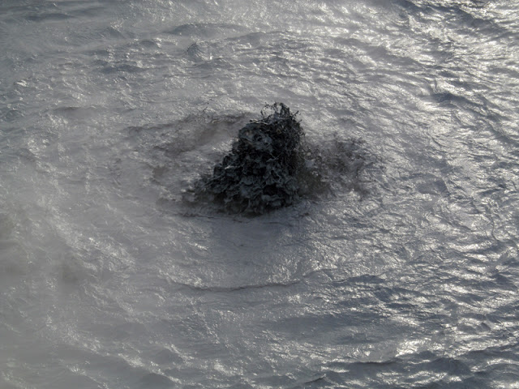
Микровселенная
До места ночлега на озере Миватн оставалось перевалить небольшой, но весьма крутой холм.
_files/IMG_2914.jpg)
Кемпинг хоть и был изрядно наполнен палатками, но не терял своего очарования в лучах заходящего солнца.
День 17
3 августа Живописные окрестности “Комариного озера”: Reykjahl(id) - Fossholl vi(d) Go(d)afoss
Пробег: 59.69 км
Общее время: 10.45-20.30
Время в движении: 4.04.34
Средняя скорость: 14.64 км/ч
Макс.скорость: 51.19 км/ч
На этот день у нас было вписано столько интересных мест, сколько ни в один другой из дней. И что весьма удобно - они все кучненько собраны вокруг Миватна прямо по дороге к Акюрейри, куда мы держали курс.
Перед выездом из кемпинга Лёша с предвкушением заготовил купальные принадлежности, т.к. направлялись мы первым делом в Grjotagja, пещеру с горячей водой 43-46 градусов.
Но у входа ожидало разочарование и потухший Лёшин взгляд - купаться запрещено. Плюс “бонусом” большая толпа любопытствующих вокруг и внутри.
Это место было более популярным в середине прошлого века до извержения Крафлы в 1975-1984 гг., когда это было общественным местом купания. Т.е. я предполагаю, что и пещера образовалась уже после извержения. Эта территория частная, поэтому ставить здесь палатки, кемперы, разжигать костры, заниматься скалолазанием и конечно принимать ванны - запрещено. Мы скромно пофотографировали и потопали через лавовое поле к пепельному кратеру.
Пепельный кратер похож на огромную гравейную песочницу. Его можно пройти по периметру, кто-то даже на баги заезжал к центру. Диаметр впечатляющий, в объектив мыльницы не помещался. А какой вид на несколько десятков километров распахивается!
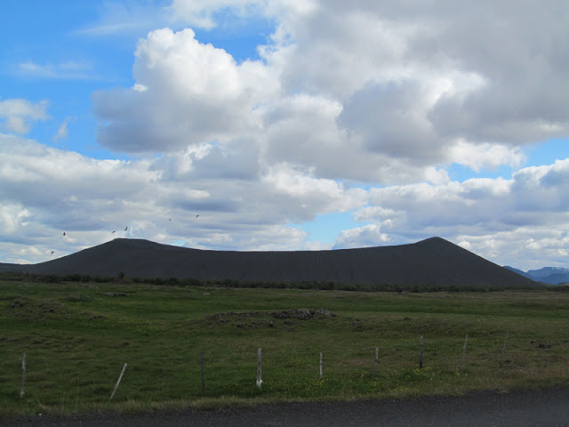
После, проехав совсем немного, увидели то, что у нас не вызывает особого трепета, а для исландцев это повод для радости и гордости - оазис деревьев, пускай и не сильно могуче стволистых, но место, в котором можно неспешно прогуляться и полюбоваться не только лесным массивом, но и необычными природными скульптурами в водах "комариного" озера.
На самом деле признаться: по приезду в Беларусь и сразу отправившись в командировку на юго-восток страны, я была несказанно счастлива видеть вокруг столько лесов. И постоянно об этом говорила коллегам Гордость исландцев за совсем небольшие клочки невысокого леса вполне оправдана. В окружении еловых, березовых ветвей и наполняя легкие лесным кислородом, чувствуешь себя гораздо комфортнее, чем в продуваемой всеми ветрами пустыне.
Здесь же мы и пообедали. Но всё время покоя не давали назойливые мушки, и не комары и не оводы, просто лезут во все отверстия бесперебойно и рой их неисчислим.
В сувенирных магазинах в продаже есть даже тематические майки.
В Диммуборгир мы не стали заезжать, может потому что и так пресытились лавовыми формами за всё наше путешествие. Сейчас немного сожалею, что не посетили, ну чем не повод вернуться Сколько их уже насобиралось -поводов для возвращения!
Мы продолжали огибать “комариное" озеро и подобрались к псевдократерам. Разглядывать их конечно лучше с высоты птичьего полета. Или довольствоваться картинками из интернета. С высоты человеческого роста, особенно моего, это место не особо впечатляет. Всего лишь зеленые холмы. Повезет, если будет светить солнце вперемежку с тучами, тогда можно поймать интересные кадры и без вертолета.
Сформировались они во время паровых взрывов горячей раскаленной лавы, когда она достигала озера, болота и другого водного объекта. У псевдократеров нет возможности для выхода магмы, т.е. извергаться они не могут, поэтому это просто очень фотогеничные и необычные формы рельфа, опять же с высоты.
Мы прогулялись по одной из тропинок вокруг кратеров и продолжили наше путешествие. Впереди была длинная дорога к Godafoss-у.
Сумасшедшие итальянцы водили хоровод внутри кратера.
Вот кто оказывается создает эти странные нло-шные рисунки на земле
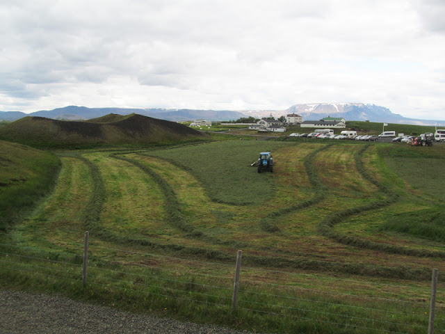
Когда мы двинулись в путь, мошки от нас не отставали. Они были стимулом двигаться как можно быстрее даже в горку. Но вот достигнув высоты нас настиг сильнейшей ветер, что дышать порою было нелегко, такое давление он создавал в области грудины. Через какое-то время мы стали сбрасывать набранные метры к еще одному озеру, но скорость не развивалась от слова “вообще”. Можно было даже упасть, не выстегнувшись вовремя, т.к. ветер все твои усилия сводил почти к нулю, куртку парусило как при шторме.
Лёша каким-то чудом вырвался вперед, я подумала, что могу не спешить и, встретив на обочине порванные в клочья покрышки, решила устроить им фотосессию. Встречаются они уже не впервые. Вообще странная манера поведения: порвалась покрышка - заменить на новую, а старую бросить на радость местным жителям. Почему так поступают - понять мне сложно.
Лёша ожидал меня через пару километров. Он теперь уже не сильно переживает, когда меня подолгу нет. Значит я что-то заприметила и фотографирую.
Дорога до места стоянки показалась немного нудной, было пару-тройку затяжных подъемов, иногда совсем не ожидаемых и перед которым хотелось как следует подкрепиться энергетическим баточником или навернуть сгущенки. Завершающий подъем был суров, рельеф мне напомнил Норвегию. На юге Исландии такого нет. А здесь - чем ближе к фьордистому побережью, тем горки всё забористее.
Летели к водопаду после изнурительного подъема - дай боже, как орлы!
Продрогли до костей и вот он кемпинг - под боком у ревущего Божьего водопада. Самый дешевый и одновременно плохой кемпинг за все время: 2000 крон за двоих. Общей комнаты нет, душ и розетки для зарядки девайсов на открытом воздухе. А т.к. забрались мы далеко на север страны с неустойчивой и как правило ветреной и промозглой погодой (температура +7), то весьма и весьма не уютно нам было на этой стоянке.
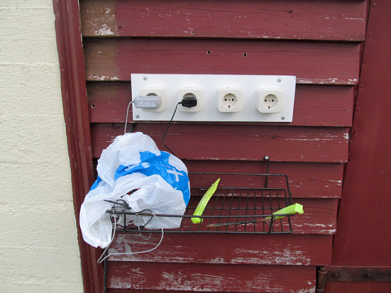
Лишь горячий суп и закат скрасили наш угрюмый исландский вечер.
День 18
4 августа Северная столица: Fossh(o)ll vi(d) Go(d)afoss - Akureyri
Пробег: 53.95 км
Общее время: 11.45-16.00
Время в движении: 3.58.13
Средняя скорость: 13.59 км/ч
Макс.скорость: 51.68 км/ч
Утро оказалось весьма промозглым, небо грозилось выдать порцию отменного дождя. Выползшие одновременно с нами канадцы из палатки были не рады такому погодному раскладу. У них летом потеплее обстоят дела. Мы посудачили о том, о сем. Собрались, перекусили, привели себя в порядок и выдвинулись к чертовски захватывающему водопаду Бога.
Почему Бога, нетрудно догадаться “в 999—1000 гг. при принятии христианства жителями в водопад были сброшены языческие идолы. Отсюда и название водопада от исл. Go(d) — «Бог»”.
Вверх по течению встречаются живописные порожки
К этому водопаду мы подошли с нужной стороны - там, где поменьше людских толп и можно никуда не спеша и не ожидая очереди, послушать симфонию низвергающихся потоков воды и побыть наедине со стихией.
По карте дорога до Акюрейри должна была быть не долгой, да по хорошей асфальтированной дороге без тягунов. Но тучи казалось спускались всё ниже и ниже, будто хотели слиться воедино с горизонтом, ветер задувал всё яростнее, а столбик термометра не преминул опуститься до 5-6 градусов.
Настроение было хорошим, может потому что именно за этим мы ехали в Исландию? За яркими острыми ощущениями и неизведанной неповторимой природой.
Постепенно мы стали набирать высоту, чтобы перевалить к фьорду Эйя Гренландского моря. Задача была не из простых, т.к. стал поливать дождь, который струями стекал с шлема без козырька и заливал весь обзор. Выручала конфета за щекой, которая не позволяла горевать, добавляя сил непрестанно крутить до заветной цели сегодняшнего дня - северной столицы Исландии.
Достигнув высшей точки долгожданного перевала, распахнулся бесподобный чарующий вид на фьорд, снежные, прикрытые завесой тумана, горы, зелень полей, переливающуюся водную гладь. Всё это в многократном размере вызывало сильнейшие ощущения прилива жизненной энергии, спускаясь со скоростью 50 км/ч по влажной ленте серпантина.
Оставалось проехать 7-10 км вдоль фьорда, чтобы достичь Акюрейри.
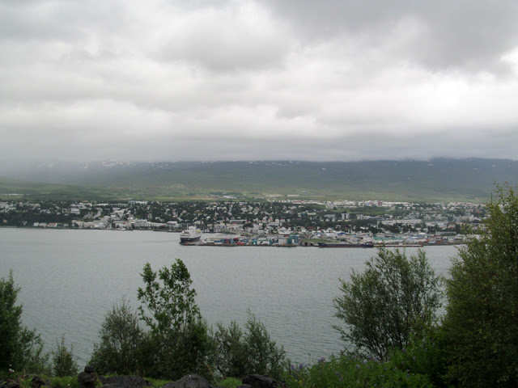
Т.к. разглядывать город с велами неловко, мы решили оставить их в кемпинге и заодно расставить палатку, пока дождь не зарядил вновь. По дороге нам попадались довольно интересные арт-объекты и даже указатель до полярного круга
Кемпинг находился на одном из городских холмов. Немного огорчило, что в нем не было общего помещения, только навес, который не сохранял тепла. А мы были с ног до головы промокшие.
На какое-то время дождь успокоился и лишь слегка накрапывал, мы направились на исследования этого небольшого городка с громким названием “Северная столица Исландии”.
Есть в нем и красивые жилые дома, и не очень. Когда окна не занавешены, то можно рассмотреть, что внутри комнат очень много милых вещей, словно каждый горожанин решил обзавестись своей мини IKEA-ей. Я такие вещи называю пылесобирателями. Это скорее всего от того, что большую часть времени жители проводят в домах или квартирах. Погода действительно не способствует длительными прогулкам и пикникам на природе.
_files/IMG_3235.jpg)
Центр города симпатичный, жаль обойти его можно всего за 30 минут.
_files/IMG_3225.jpg)
Очень понравился один из слоганов города, численность населения которого в 5 раз меньше нашего Молодечно: “Акюрейри - город музеев. Приезжайте к нам!” и инфокарта.
В нашей стране мы пытаемся развивать туризм и идем вроде бы правильным путем, правда таким медленным, чуть ли не похоронным шагом, что знают о нас до сих пор только в странах бывшего СССР. Несмотря на Чемпионат мира по хоккею, Минские соглашения, Азаренко, Домрачеву и Wargaming. Но простите за лирическое отступление.
Продолжаем знакомиться с Акюрейри. На холме возвышается главный символ города - лютеранская церковь.
На главной улице много туристических магазинчиков и кафешек. Есть рестораны, где можно откушать китятину (от 40 евро за блюдо).
Здесь же есть граффити английского художника Гидо ванн Хельтена, автора девушки в вышиванке на стене общаги в Минске по ул. Рабкоровская.
Усилившийся дождь намекнул нам, что пора уже возвращаться в кемпинг, согреться в душе и уснуть крепким сном. Назавтра ранним утром у нас запланировано наблюдение за китами
День 19
5 августа Детский восторг: Akureyri - Reykjav(i)k
Пробег: 16.63 км
Общее время: прогулка по Акюрейри и до аэропорта + от аэропорта Рейкьявика до кемпинга
Время в движении: 1.54.23
Средняя скорость: 8.72 км/ч
Макс.скорость: 27.8 км/ч
В 09.00 мы отплывали к китам. Вещи заранее собрали, но оставили их вместе с великами в кемпинге. Погода была ужаснейшая: дождина, ветрюган и холодрыга (+5). Тур был оплачен еще в Минске, отходного пути нет.
Ничего не помня о китах из курса биологии, я думала, что нет никакой надежды их увидеть сегодняшним пасмурным днем. Но оказывается, что на поверхность они по-любому выплывают, чтобы вдохнуть воздуха, т.к. и все млекопитающие дышат легкими.
К тому же, Ambassador Whale Watching гарантирует, что китов туристы непременно увидят, а если нет, то на следующий тур турист попадет бесплатно (You are guaranteed to spot whales, or your next trip is FREE of charge!)
Мы подошли к нашему судну. Сопровождающая девушка-гид очень искренне улыбалась, как-будто стояла не в огромном костюме, похожем на скафандр, с натянутой кепкой и капюшоном под дождем, а где-нибудь на пляже Майами за барной стойкой.
_files/IMG_3272.jpg)
Нам раздали буклеты, предложили одеть пончо из плотной непромокаемой ткани и занять места внутри или снаружи. Тур длится около 4 часов. Плыть до места скопления китов около 1-1.5. Буклет сообщал, что увидеть мы сможем до 7 разновидностей китов и дельфинов.
Пока позволяло время мы согревались в рубке капитана.
Когда все собрались, кораблик отправился к острову Хрисей. Погода не сулила ничего обнадеживающего.
В пути наш гид рассказывала много информации. Ее миссия состояла не только в этом. Ей приходилось стоять на так называемой трибуне почти неподвижно все 3 часа, следить в бинокль и координировать наши взоры, чтобы мы не пропустили ни одного кита, их спинки или плавник. Например, 12 o’clock, 4 o’clock, 2 o’clock и тп.
_files/IMG_3352.jpg)
Едва мы прибыли на место, как сразу же увидели китов. Это придало оптимизма, что ближайший час будет потрачен не на пустое дрейфование в водах фьорда.
Мне посчастливилось стоять с семьей азиатов. Отец семейства неистово рыдал, взвывал и топтался по ногам близстоящих людей от восторга, когда видел пускай небольшой кусочек хребта кита.
Из вики: “Горбатый кит — один из самых энергичных и акробатичных больших китов, чьё поведение, включая эффектное выпрыгивание из воды, привлекает к нему внимание туристов. В романе Германа Мелвилла «Моби Дик» горбатый кит охарактеризован следующим образом:
"Из всех китов это самый игривый и легконравный, всегда окружённый весёлыми брызгами и белой пеной."
Горбатые киты нередко бьют и хлопают по поверхности моря длинными грудными плавниками и хвостовым плавником, взбивая пену, перекатываются на спине, выставляют из воды морды. Часто полностью выпрыгивают из воды в вертикальном положении и с оглушительным всплеском падают вниз (предположительно, таким образом горбатые киты сбрасывают с себя экзопаразитов-обрастателей).”
Пускай мы не увидели такого
Но махину в десяток метров длиной и весом в 20-30 т, а то и больше, мы видели на расстоянии 5 м!
У нас оставалось еще очень много времени в Акюрейри до отлета, который мы весь исследовали вчерашним вечером.
Мы шатались по торговым центрам, закупились сувенирами друзьям и родным, объедались самым вкусным в мире мороженным. А на улице беспрестанно лупил дождь _files/sad.gif)
Начинки к мороженному!! Аааа!
_files/IMG_3375.jpg)
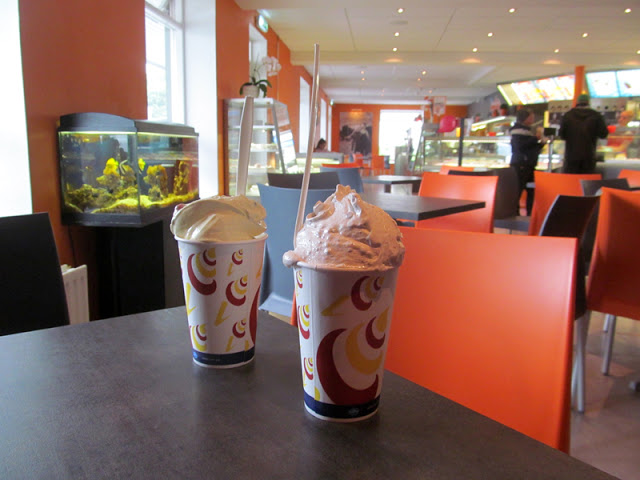
Аэропорт Акюрейри находится почти в городе, велы можно не разбирать, поэтому ближе ко времени отлета мы неспешно отправились в его сторону.
Наблюдали отчаянного исландца, который не преминул возможности воспользоваться удачным ветром и позаниматься кайтсёрфингом.
Аэропорт примечателен тем, что он совсем небольшой, досмотра нет, наши велосипеды принял из рук в руки парниша в шлепанцах на носок. А взлетная полоса находится прямо над фьордом.
_files/IMG_3398.jpg)
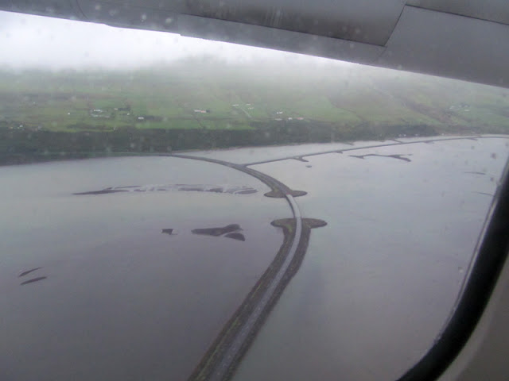
Мы возвращались над пушистыми облаками, грандиозными ледниками в начальную точку нашего путешествия - Рейкьявик. Весьма порадовала погода в столице: было солнечно, ясно и в наших ста одежках даже жарко.
Мы остановились в том же кемпинге, что и в первый день нашего пребывания. Впечатления от него были уже немного другими, более спокойными. Приятно было вновь увидеть группу испанских велосипедистов (с ними мы ехали из Хофна в Эгильстадир), один из которых из Украины, но давно и надежно осел в Испании с родителями. Выглядели они измотанными и потрепанными исландскими ветрами и снегами, и в один голос сообщили, что следующий свой отпуск проведут в Коста-Рике
День 20
6 августа День, когда я полюбила Исландию: Reykjav(i)k - Kr(y)suv(i)kurberg
Пробег: 51.14 км
Общее время: 14.00-18.30
Время в движении: 3.35.07
Средняя скорость: 14.26 км/ч
Макс.скорость: 53.75 км/ч
Наше путешествие подходит к логическому завершению. 2 дня до возвращения на Землю с “Девятой планеты”. От аэропорта нас разделяет 50 км по прямой. Но эти 2 дня мы будем смаковать подольше: прокатимся на самый край полуострова Рейкьянес, заночуем на дикой стоянке у океана, подержим на руках мост, соединяющий 2 континента. И со слезами попрощаемся с этой невероятной, полной прекрас и чудес, страной.
А с утра самое время набить животы по-барски.
_files/IMG_3419.jpg)
В Рейкьявике мы закупимся исландской шерстью в подарок маме
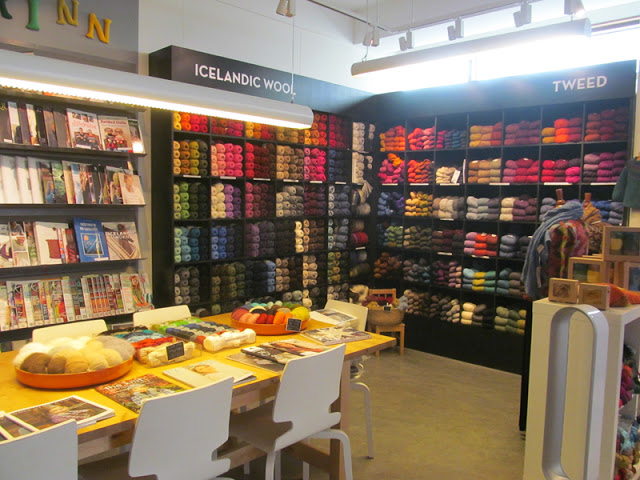
Еще раз объедимся бесподобно вкусным мороженным
И двинем в сторону Крисувика - горно-вулканической системы с бурболками.
Как и при выезде из Осло у нас возникнут вопросы с навигацией, но разрешимые.
Дома в городе и пригороде малоэтажные, с рваными газонами.
Мы выезжаем на почти пустынную дорогу, где можно остаться наедине с исландской природой. И даже ветер сегодня по-особенному приятен и радует. Горки нисколько не напрягают, а приносят удовольствия. Такой воздух кристально чистый и свежий. Хочется запомнить всё-всё. Или остаться здесь подольше, на месяц, два или три.
Интересная геотермальная зона, хоть и не такая обширная, как в Хверире, находится в Селтуне. Всё аналогично: кипящие и шипящие бурболки, паровые жерла, серные эксцентричные отложения.
После Селтуна мы еще немного проезжаем по асфальту, сворачиваем на перекрестке в сторону Гриндавика и оттуда уже по гравейке налево к океану и нашей стоянке.
Место лучшее из лучших в этом путешествии: ни души, воздух рассекают бесчисленные чайки, на горизонте мерно проплывают корабли, Солнце чарующе блестит на океанской глади. Безмолвность, безмятежность.
Мне не здоровится, Лёша расставляет палатку, разогревает ужин и подбадривает. Кушаем и слушаем чаек.
День 21
7 августа Птичьи земли: Kr(y)suv(i)kurberg - Gar(d)ur
Пробег: 77.78 км
Общее время: 09.10-20.20
Время в движении: 5.55.55
Средняя скорость: 13.54 км/ч
Макс.скорость: 55.34 км/ч
С утра мне снова не здоровилось и при переезде по гравейке до асфальта было совсем плохое состояние, что пришлось прилечь рядом с лавовым полем и полежать минут 30. Когда же отпустило, можно было с новыми силами вкручивать к интересностям этого дня.
В Гриндавике сделали набег на магазин, снова объелись их вкусным мороженным и долго раздумывали, ехать ли в Голубую лагуну. Билет не дешевый, то ли 40, то ли 50 евро. В горячих источниках мы вдоволь наплескались в Ландманналаугаре. Здесь что, только вода голубая, а люда в разы больше. Как позже узнали, еще и билет бронировать заранее нужно.
Поэтому направились к “Мысу Дымов”, которые виднеются задолго до того, как появятся вблизи. Эти неимоверного объема клубы пара приводили меня в безумный восторг! Я бежала навстречу им, была поглощена, надышалась, закашлялась, но продолжала радоваться этому неистовому проявлению энергии недр земли.
На мысе было много птенцов и их мам, которые бродили по дороге, не ощущая потенциальной опасности от джипов. Одного такого мы попробовали переместить на поляну подальше. Ему это, конечно, не совсем понравилось.
Интересно, что туристы в Исландии ведут себя иначе, чем в другом популярном туристическом месте - не суетятся, не создают шума и криков: “Аллочка, а сфотографируй меня теперь так”. Степенно прогуливаются, вдумчиво читают стенды, умиротворенно сидят на лавочках, траве и смотрят вдаль. Поэтому мыс Рейкьянес - прекрасное место для уединения среди людей. Каждый думает о своем и никому не мешает.
В результате дрейфа континентов на территории полуострова Рейкьянес образовалась трещина, через которую переброшен так называемый «Мост континентов», соединяющий евроазиатскую плиту с североамериканской.
До него оставалось рукой подать, но настойчивый ветер никак не давал это сделать побыстрее.
Ну что ж, справа от меня Евразийская плита, слева - Североамериканская.
Надержавшись вдоволь "геологически значимого" моста, мы закругляли наше путешествие в городке Кеф(б)лавик, в 2 км от аэропорта. С утра еще хотели посетить музей рок-н-ролла перед отлетом. Но здешний кемпинг был против палаток и велосипедов. Нам посоветовали остановиться в соседнем городке Гардур, в 8.5 км на северо-запад.
Покрутив еще немного по Кеф(б)лавику, мы с упорным усилием направились в Гардур. Ветер был против нас. С одной стороны, мы были рады этому, ведь завтра мы с легкостью докрутим до аэропорта, когда ветер будет в нашей команде
В кемпинге Гардура на выбор были домики и места под палатку. Еще здесь оказалось полным полно газовых баллонов, одного из которых нам так не хватало для приготовления ужина + различные соусы, кетчупы, средства для мытья посуды.
На закате мы прогулялись как пожилая парочка по улочкам тихого городка, полюбовались бестревожным океаном и пристанью. Последняя ночь на исландской земле, которую так не хочется покидать.
День 22
8 августа Дождливое “до свидания”: Gar(d)ur - Keflav(i)k International Airport
Пробег: 10.82 км
Время в движении: 0.49.02
Средняя скорость: 13.25 км/ч
Макс.скорость: 25.38 км/ч
Утро последнего дня на исландской земле было влажным и ветреным. Было нестерпимо печально покидать этот остров. Даже ветер не думал нас отпускать и вчерашним надеждам не суждено было сбыться - он снова нес свои воздушные потоки нам в лицо, что помогало растянуть оставшиеся 10 км на подольше, пускай и под дождем.
Девушка на плакате также не смогла сдержать слез и провожала нас грустным взглядом.
А вот сотрудники аэропорта очень повеселили напутствием перед досмотром.
_files/IMG_3693.jpg)
На этой фотографии я счастливая, потому что Исландия каждому дарит изумительные впечатления и воспоминания, которые окрыляют и вдохновляют.
Пролетая над любимой Норвегией, мы мечтали, что когда-нибудь вновь окажемся в северном королевстве гармонии и красоты.
Come and be inspired by Iceland
Исландия - мечта всех романтиков и авантюристов. Здесь каждый найдет себе маршрут по душе: с бродами по уши, с песчаными бурями, не укатанной гравейкой или только асфальт. Но несомненно одно: везде вас будут сопровождать бесподобные неземные пейзажи, от которых дух перехватит много-много раз.
Спасибо всем, кто читал и смотрел!
п.с. огромный респект rewert и Pilihrym за прокачку велов и колес к путешествию. Отработали от и до. Ни разу еще такого в велопутешествиях не было, чтоб ничего не сломалось! Рекомендуем!
пс.пс. Захотелось опровергнуть саму себя
Видно напугала я многих, что Исландия очень дорогая страна и потратили мы баснословную сумму на нашу поездку в 2015 году.
Это не так. И добраться до многих ее достопримечательностей куда проще, чем тоже самое сделать на Камчатке.
Тратить деньги в Исландии особенно негде и не на что. Не, ну можно, конечно, купить себе в подарок традиционный свитер Лопапейса за 300-... евро или привезти настоящий исландский воздух в баночке за 5-7 евро
НО
Ночлег Бесплатно
Гейзеры Бесплатно
Океан с черным пляжем Бесплатно
Бескрайние лавовые плюшевые поля Бесплатно
Любование милыми тупиками Бесплатно
Многочисленные водопады невероятной красоты Бесплатно
Термальные источники Бесплатно
Национальные парки с цветными дышащими горами и ледниками Бесплатно
Основной статьей расхода может стать покупка/докупка провианта. Ну а на китов посмотреть можно и в других местах.
Газ покупался на заправках пару раз фирмы Сoleman
баллон 450г ~1600крон (10-11 евро), мелкий 1100крон (7евро)
Что касается билетов, то лучше покупать за полгода и искать на сайте авиакомпании Norwegian.no и можно уложиться в 200-300 евро туда-обратно на 1 человека с багажом и велосипедом. Не забываем, что любимый велосипед идет как спорт.инвентарь и оплачивается по отдельной таксе.
Мы же полетели через Wow air и заплатили на 1 человека 450 евро туда-обратно со всеми сборами и спортинвентарем.
Если всё-таки не хотите лететь в Исландию, то послушайте вот эту группу Of Monsters and men - сказочные песни сказочно исполняют
И подписывайтесь на Vandrouki.by, кто еще на них не подписан. Правда, приятные цены и неожиданные акции
| | |